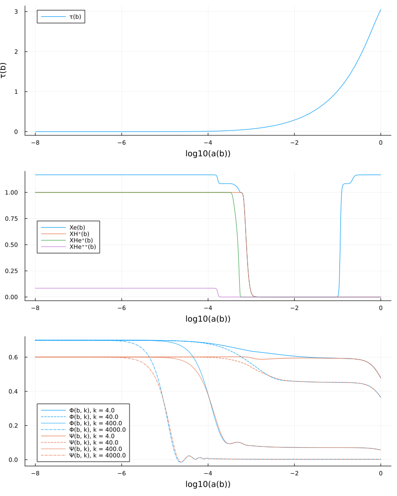
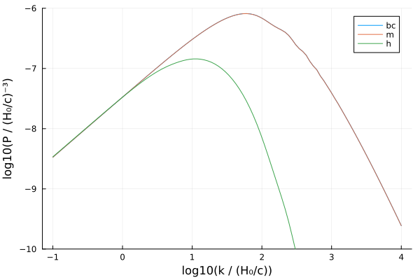
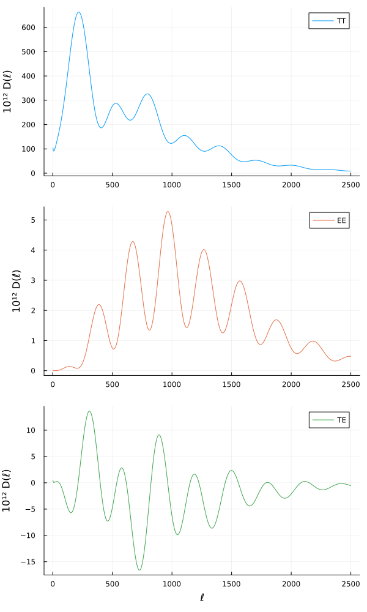

Minimal ΛCDM model
In addition to component-based models, SymBoltz provides a minimal ΛCDM model for those that prefer everything in one large system. It includes all variables, parameters and equations in the background, thermodynamics and perturbations, and makes it very easy to modify the model! It uses the logarithm of the scale factor $b = \ln a$ as the independent variable, and computes the conformal time $τ(b)$ as a variable.
Copy-paste the code below, for example into a Jupyter notebook. Modify the equations as you wish, but look out for collisions between variable names! Comment out equations and species to disable them. Equations to generalize the cosmological constant to $w_0 w_a$ dark energy are included below, but commented by default. You can also adapt other components already implemented in the src/models/ library in SymBoltz.
using SymBoltz
# Constants, some functions and atomic energy levels defined in internal files
@unpack kB, ħ, c, GN, eV, me, mH, mHe, σT, aR, δkron, smoothifelse, λH2s1s, EH2s1s, EH∞2s, EHe2s1s, λHe2p1s, fHe2p1s, EHe2p2s, EHe∞2s, EHe⁺∞1s, EHet∞2s, λHet2p1s, fHet2p1s, EHet2s1s, EHet2p2s = SymBoltz
lγmax = 10
lνmax = 10
lhmax = 10
# RECFAST switches off He corrections when XH⁺ ≈ XHe⁺ ≈ 1, but we use a smooth+symmetric regularization of
# (1-X) that makes it a small positive number, even if numerical errors causes X to drift slightly above 1
reg(x; ϵ = 1e-9) = √(x^2 + ϵ^2)
ΛH = 8.2245809
ΛHe = 51.3
A2ps = 1.798287e9
A2pt = 177.58e0
αHfit(T; F=1.125, a=4.309, b=-0.6166, c=0.6703, d=0.5300, T₀=1e4) = F * 1e-19 * a * (T/T₀)^b / (1 + c * (T/T₀)^d)
αHefit(T; q=NaN, p=NaN, T1=10^5.114, T2=3.0) = q / (√(T/T2) * (1+√(T/T2))^(1-p) * (1+√(T/T1))^(1+p))
KHfitfactorfunc(a, A, z, w) = A*exp(-((log(a)+z)/w)^2)
γHe(; A=NaN, σ=NaN, f=NaN) = 3*A*fHe*reg(1-XHe⁺)*c^2 / (8π*σ*√(2π/(β*mHe*c^2))*reg(1-XH⁺)*f^3)
# Massive neutrino distribution function and quadrature momenta
nx = 4 # number of momenta
f₀(x) = 1 / (exp(x) + 1)
dlnf₀_dlnx(x) = -x / (1 + exp(-x))
x, W = SymBoltz.momentum_quadrature(f₀, nx)
x² = x .^ 2
∫dx_x²_f₀(f) = sum(collect(f .* W))
# 1) Independent variable for time evolution
@independent_variables b # b = ln(a)
D = Differential(b) # derivative operator
# 2) Parameters (add your own)
pars = @parameters begin
k, # wavenumber
h, H0SI, # Hubble parameter in SI units (most equations have units where H0=1 and do not need these)
Ωc0, # cold dark matter
Ωb0, YHe, fHe, # baryons and recombination
Tγ0, Ωγ0, # photons
Ων0, Tν0, Nν, # massless neutrinos
mh, mh_eV, Nh, Th0, Ωh0, yh0, Iρh0, # massive neutrinos
ΩΛ0, w0, wa, cΛs2, # dark energy (cosmological constant or w0wa)
zre1, Δzre1, nre1, # 1st reionization
zre2, Δzre2, nre2, # 2nd reionization
C, # integration constant in initial conditions
As, ns # primordial power spectrum
end
# 3) Background (b) and perturbation (b,k) variables (add your own)
vars = @variables begin
a(b), τ(b), z(b), ℋ(b), H(b), Ψ(b,k), Φ(b,k), χ(b), [backwards = true], # metric
ρ(b), P(b), δρ(b,k), Π(b,k), # gravity
ρb(b), Tb(b), δb(b,k), Δb(b,k), θb(b,k), # baryons
κ(b), [backwards = true], v(b), csb2(b), β(b), ΔT(b), DTb(b), μc²(b), Xe(b), nH(b), nHe(b), ne(b), Xe(b), ne(b), λe(b), HSI(b), # recombination
XH⁺(b), nH(b), αH(b), βH(b), KH(b), KHfitfactor(b), CH(b), # Hydrogen recombination
nHe(b), XHe⁺(b), XHe⁺⁺(b), αHe(b), βHe(b), RHe⁺(b), τHe(b), KHe(b), invKHe0(b), invKHe1(b), invKHe2(b), CHe(b), DXHe⁺(b), DXHet⁺(b), γ2ps(b), αHet(b), βHet(b), τHet(b), pHet(b), CHet(b), CHetnum(b), γ2pt(b), # Helium recombination
Xre1(b), Xre2(b), # reionization
ργ(b), Pγ(b), wγ(b), Tγ(b), Fγ0(b,k), Fγ(b,k)[1:lγmax], Gγ0(b,k), Gγ(b,k)[1:lγmax], δγ(b,k), θγ(b,k), σγ(b,k), Πγ(b,k), # photons
ρc(b), δc(b,k), Δc(b,k), θc(b,k), # cold dark matter
ρν(b), Pν(b), wν(b), Tν(b), Fν0(b,k), Fν(b,k)[1:lνmax], δν(b,k), θν(b,k), σν(b,k), # massless neutrinos
ρh(b), Ph(b), wh(b), Ωh(b), Th(b), yh(b), csh2(b,k), δh(b,k), Δh(b,k), σh(b,k), uh(b,k), θh(b,k), Eh(b)[1:nx], ψh0(b,k)[1:nx], ψh(b,k)[1:nx,1:lhmax], Iρh(b), IPh(b), Iδρh(b,k), # massive neutrinos
ρΛ(b), PΛ(b), wΛ(b), cΛa2(b), δΛ(b,k), θΛ(b,k), ΔΛ(b,k), # dark energy (cosmological constant or w0wa)
fν(b), # misc
ρm(b,k), Δm(b,k), # matter source functions
ST_SW(b,k), ST_ISW(b,k), ST_Doppler(b,k), ST_polarization(b,k), ST(b,k), SE(b,k), Sψ(b,k) # CMB source functions
end
# 4) Equations for time evolution (modify or add your own)
Dτ(x) = ℋ * D(x) # conformal time derivative d/dτ = (db/dτ) d/db = ℋ d/db
eqs = [
# metric equations
a ~ exp(b)
z ~ 1/a - 1
H ~ ℋ / a
D(τ) ~ 1/ℋ
D(χ) ~ -1/ℋ
# gravity equations
ℋ ~ √(8π/3 * ρ) * a # 1st Friedmann equation
D(Φ) ~ -4π/3*a^2/ℋ^2*δρ - k^2/(3ℋ^2)*Φ - Ψ
k^2 * (Φ - Ψ) ~ 12π * a^2 * Π
ρ ~ ρc + ρb + ργ + ρν + ρh + ρΛ
P ~ Pγ + Pν + Ph + PΛ
δρ ~ δc*ρc + δb*ρb + δγ*ργ + δν*ρν + δh*ρh + δΛ*ρΛ
Π ~ (1+wγ)*ργ*σγ + (1+wν)*ρν*σν + (1+wh)*ρh*σh
# baryon recombination
β ~ 1 / (kB*Tb)
λe ~ 2π*ħ / √(2π*me/β)
HSI ~ H0SI * H
D(κ) ~ -a/H0SI * ne * σT * c / ℋ
v ~ expand_derivatives(Dτ(exp(-κ)))
csb2 ~ kB/μc² * (Tb - D(Tb)/3)
μc² ~ mH*c^2 / (1 + (mH/mHe-1)*YHe + Xe*(1-YHe))
DTb ~ -2Tb*ℋ - a/h * 8/3*σT*aR/H100*Tγ^4 / (me*c) * Xe / (1+fHe+Xe) * ΔT
D(ΔT) ~ DTb/ℋ - D(Tγ)
Tb ~ ΔT + Tγ
nH ~ (1-YHe) * ρb*H0SI^2/GN / mH
nHe ~ fHe * nH
ne ~ Xe * nH
Xe ~ XH⁺ + fHe*XHe⁺ + XHe⁺⁺ + Xre1 + Xre2
# baryon H⁺ + e⁻ recombination
αH ~ αHfit(Tb)
βH ~ αH / λe^3 * exp(-β*EH∞2s)
KHfitfactor ~ 1 + KHfitfactorfunc(a, -0.14, 7.28, 0.18) + KHfitfactorfunc(a, 0.079, 6.73, 0.33)
KH ~ KHfitfactor/8π * λH2s1s^3 / HSI
CH ~ smoothifelse(XH⁺ - 0.99, (1 + KH*ΛH*nH*(1-XH⁺)) / (1 + KH*(ΛH+βH)*nH*(1-XH⁺)), 1; k = 1e3)
D(XH⁺) ~ -a/H0SI * CH * (αH*XH⁺*ne - βH*(1-XH⁺)*exp(-β*EH2s1s)) / ℋ
# baryon He⁺ + e⁻ singlet recombination
αHe ~ αHefit(Tb; q=10^(-16.744), p=0.711)
βHe ~ 4 * αHe / λe^3 * exp(-β*EHe∞2s)
KHe ~ 1 / (invKHe0 + invKHe1 + invKHe2)
invKHe0 ~ 8π*HSI / λHe2p1s^3
τHe ~ 3*A2ps*nHe*reg(1-XHe⁺) / invKHe0
invKHe1 ~ -exp(-τHe) * invKHe0
γ2ps ~ γHe(A = A2ps, σ = 1.436289e-22, f = fHe2p1s)
invKHe2 ~ A2ps/(1+0.36*γ2ps^0.86)*3*nHe*(1-XHe⁺)
CHe ~ smoothifelse(XHe⁺ - 0.99, (exp(-β*EHe2p2s) + KHe*ΛHe*nHe*(1-XHe⁺)) / (exp(-β*EHe2p2s) + KHe*(ΛHe+βHe)*nHe*(1-XHe⁺)), 1; k = 1e3)
DXHe⁺ ~ -a/H0SI * CHe * (αHe*XHe⁺*ne - βHe*(1-XHe⁺)*exp(-β*EHe2s1s))
# baryon He⁺ + e⁻ triplet recombination
αHet ~ αHefit(Tb; q=10^(-16.306), p=0.761)
βHet ~ 4/3 * αHet / λe^3 * exp(-β*EHet∞2s)
τHet ~ 3*A2pt*nHe*reg(1-XHe⁺) * λHet2p1s^3/(8π*HSI)
pHet ~ (1 - exp(-τHet)) / τHet
γ2pt ~ γHe(A = A2pt, σ = 1.484872e-22, f = fHet2p1s)
CHetnum ~ A2pt*(pHet+1/(1+0.66*γ2pt^0.9)/3)*exp(-β*EHet2p2s)
CHet ~ reg(CHetnum) / (reg(CHetnum) + βHet)
DXHet⁺ ~ -a/H0SI * CHet * (αHet*XHe⁺*ne - βHet*(1-XHe⁺)*3*exp(-β*EHet2s1s))
# baryon He⁺ + e⁻ total recombination
D(XHe⁺) ~ (DXHe⁺ + DXHet⁺) / ℋ
# baryon He⁺⁺ + e⁻ recombination
RHe⁺ ~ exp(-β*EHe⁺∞1s) / (nH * λe^3)
XHe⁺⁺ ~ 2RHe⁺*fHe / (1+fHe+RHe⁺) / (1 + √(1 + 4RHe⁺*fHe/(1+fHe+RHe⁺)^2))
# reionization
Xre1 ~ smoothifelse((1+zre1)^nre1 - (1+z)^nre1, 0, 1 + fHe; k = 1/(nre1*(1+zre1)^(nre1-1)*Δzre1))
Xre2 ~ smoothifelse((1+zre2)^nre2 - (1+z)^nre2, 0, 0 + fHe; k = 1/(nre2*(1+zre2)^(nre2-1)*Δzre2))
# baryons
ρb ~ 3/8π * Ωb0 / a^3
D(δb) ~ (-θb - 3ℋ*csb2*δb) / ℋ + 3*D(Φ)
D(θb) ~ -θb + (k^2*csb2*δb + k^2*Ψ) / ℋ - 4/3*D(κ)*ργ/ρb*(θγ-θb)
Δb ~ δb + 3ℋ*θb/k^2
# photons
Tγ ~ Tγ0 / a
ργ ~ 3/8π * Ωγ0 / a^4
wγ ~ 1/3
Pγ ~ wγ * ργ
D(Fγ0) ~ -k*Fγ[1]/ℋ + 4*D(Φ)
D(Fγ[1]) ~ k/3*(Fγ0-2Fγ[2]+4Ψ)/ℋ - 4/3 * D(κ)/k * (θb - θγ)
[D(Fγ[l]) ~ k/(2l+1) * (l*Fγ[l-1] - (l+1)*Fγ[l+1])/ℋ + D(κ) * (Fγ[l] - δkron(l,2)/10*Πγ) for l in 2:lγmax-1]...
D(Fγ[lγmax]) ~ (k*Fγ[lγmax-1] - (lγmax+1) / τ * Fγ[lγmax])/ℋ + D(κ) * Fγ[lγmax]
δγ ~ Fγ0
θγ ~ 3k*Fγ[1]/4
σγ ~ Fγ[2]/2
Πγ ~ Fγ[2] + Gγ0 + Gγ[2]
D(Gγ0) ~ k * (-Gγ[1])/ℋ + D(κ) * (Gγ0 - Πγ/2)
D(Gγ[1]) ~ k/(2*1+1) * (1*Gγ0 - 2*Gγ[2])/ℋ + D(κ) * Gγ[1]
[D(Gγ[l]) ~ k/(2l+1) * (l*Gγ[l-1] - (l+1)*Gγ[l+1])/ℋ + D(κ) * (Gγ[l] - δkron(l,2)/10*Πγ) for l in 2:lγmax-1]...
D(Gγ[lγmax]) ~ (k*Gγ[lγmax-1] - (lγmax+1) / τ * Gγ[lγmax])/ℋ + D(κ) * Gγ[lγmax]
# cold dark matter
ρc ~ 3/8π * Ωc0 / a^3
D(δc) ~ -θc/ℋ + 3*D(Φ)
D(θc) ~ -θc + k^2*Ψ/ℋ
Δc ~ δc + 3ℋ*θc/k^2
# massless neutrinos
ρν ~ 3/8π * Ων0 / a^4
wν ~ 1/3
Pν ~ wν * ρν
Tν ~ Tν0 / a
D(Fν0) ~ -k*Fν[1]/ℋ + 4*D(Φ)
D(Fν[1]) ~ k/3*(Fν0-2Fν[2]+4Ψ)/ℋ
[D(Fν[l]) ~ k/(2l+1) * (l*Fν[l-1] - (l+1)*Fν[l+1])/ℋ for l in 2:lνmax-1]...
D(Fν[lνmax]) ~ (k*Fν[lνmax-1] - (lνmax+1) / τ * Fν[lνmax])/ℋ
δν ~ Fν0
θν ~ 3k*Fν[1]/4
σν ~ Fν[2]/2
# massive neutrinos
Th ~ Th0 / a
yh ~ yh0 * a
Iρh ~ ∫dx_x²_f₀(Eh)
IPh ~ ∫dx_x²_f₀(x² ./ Eh)
ρh ~ 2Nh/(2π^2) * (kB*Th)^4/(ħ*c)^3 * Iρh / ((H0SI*c)^2/GN)
Ph ~ 2Nh/(6π^2) * (kB*Th)^4/(ħ*c)^3 * IPh / ((H0SI*c)^2/GN)
wh ~ Ph / ρh
Iδρh ~ ∫dx_x²_f₀(Eh .* ψh0)
δh ~ Iδρh / Iρh
Δh ~ δh + 3ℋ*(1+wh)*θh/k^2
uh ~ ∫dx_x²_f₀(x .* ψh[:,1]) / (Iρh + IPh/3)
θh ~ k * uh
σh ~ 2/3 * ∫dx_x²_f₀(x² ./ Eh .* ψh[:,2]) / (Iρh + IPh/3)
csh2 ~ ∫dx_x²_f₀(x² ./ Eh .* ψh0) / Iδρh
[Eh[i] ~ √(x[i]^2 + yh^2) for i in 1:nx]...
[D(ψh0[i]) ~ -k * x[i]/Eh[i] * ψh[i,1]/ℋ - D(Φ) * dlnf₀_dlnx(x[i]) for i in 1:nx]...
[D(ψh[i,1]) ~ (k/3 * x[i]/Eh[i] * (ψh0[i] - 2ψh[i,2]) - k/3 * Eh[i]/x[i] * Ψ * dlnf₀_dlnx(x[i]))/ℋ for i in 1:nx]...
[D(ψh[i,l]) ~ k/(2l+1) * x[i]/Eh[i] * (l*ψh[i,l-1] - (l+1) * ψh[i,l+1])/ℋ for i in 1:nx, l in 2:lhmax-1]...
[D(ψh[i,lhmax]) ~ k/(2lhmax+1) * x[i]/Eh[i] * (lhmax*ψh[i,lhmax-1] - (lhmax+1) * ((2lhmax+1) * Eh[i]/x[i] * ψh[i,lhmax] / (k*τ) - ψh[i,lhmax-1]))/ℋ for i in 1:nx]...
# dark energy (cosmological constant or w0wa)
wΛ ~ w0 + wa*(1-a)
ρΛ ~ 3/8π*ΩΛ0 * abs(a)^(-3*(1+w0+wa)) * exp(-3wa*(1-a))
PΛ ~ wΛ*ρΛ
δΛ ~ 0 # for CC
θΛ ~ 0 # for CC
#cΛa2 ~ wΛ - D(wΛ)/(3*(1+wΛ)) # for w0wa
#D(δΛ) ~ -(1+wΛ)*(θΛ/ℋ-3*D(Φ)) - 3*(cΛs2-wΛ)*δΛ - 9*ℋ/k^2*(1+wΛ)*(cΛs2-cΛa2)*θΛ # for w0wa
#D(θΛ) ~ -(1-3*cΛs2)*θΛ + (cΛs2/(1+wΛ)*k^2*δΛ + k^2*Ψ)/ℋ # for w0wa
ΔΛ ~ δΛ + 3ℋ*(1+wΛ)*θΛ/k^2
# neutrino-to-radiation fraction
fν ~ (ρν + ρh) / (ρν + ρh + ργ)
# matter source functions
ρm ~ ρb + ρc + ρh
Δm ~ (ρb*Δb + ρc*Δc + ρh*Δh) / ρm
# CMB source functions (per unit conformal time, as they are integrated over τ)
ST_SW ~ v * (δγ/4 + Ψ + Πγ/16)
ST_ISW ~ exp(-κ) * Dτ(Ψ + Φ) |> expand_derivatives
ST_Doppler ~ Dτ(v*θb) / k^2 |> expand_derivatives
ST_polarization ~ 3/(16k^2) * Dτ(Dτ(v*Πγ)) |> expand_derivatives
ST ~ ST_SW + ST_ISW + ST_Doppler + ST_polarization
SE ~ 3/16 * v*Πγ / (k*χ)^2
Sψ ~ -(Ψ + Φ)
]
# 5) Equations for initial conditions (modify or add your own)
initialization_eqs = [
# metric/gravity
Ψ ~ 20C / (15 + 4fν)
τ ~ 1 / ℋ # radiation domination
# baryons
δb ~ -3/2 * Ψ
θb ~ 1/2 * (k^2*τ) * Ψ
# photons
Fγ0 ~ -2Ψ
Fγ[1] ~ 2/3 * k*τ*Ψ
Fγ[2] ~ -8/15 * k/Dτ(κ) * Fγ[1]
[Fγ[l] ~ -l/(2l+1) * k/Dτ(κ) * Fγ[l-1] for l in 3:lγmax]...
Gγ0 ~ 5/16 * Fγ[2]
Gγ[1] ~ -1/16 * k/Dτ(κ) * Fγ[2]
Gγ[2] ~ 1/16 * Fγ[2]
[Gγ[l] ~ -l/(2l+1) * k/Dτ(κ) * Gγ[l-1] for l in 3:lγmax]...
# cold dark matter
δc ~ -3/2 * Ψ
θc ~ 1/2 * (k^2*τ) * Ψ
# massless neutrinos
δν ~ -2 * Ψ
θν ~ 1/2 * (k^2*τ) * Ψ
σν ~ 1/15 * (k*τ)^2 * Ψ
[Fν[l] ~ l/(2l+1) * k*τ * Fν[l-1] for l in 3:lνmax]...
# massive neutrinos
[ψh0[i] ~ -1/4 * (-2Ψ) * dlnf₀_dlnx(x[i]) for i in 1:nx]...
[ψh[i,1] ~ -1/3 * Eh[i]/x[i] * (1/2*k*τ*Ψ) * dlnf₀_dlnx(x[i]) for i in 1:nx]...
[ψh[i,2] ~ -1/2 * (1/15*(k*τ)^2*Ψ) * dlnf₀_dlnx(x[i]) for i in 1:nx]...
[ψh[i,l] ~ 0 for i in 1:nx, l in 3:lhmax]...
# dark energy (w0wa)
#δΛ ~ -3/2 * (1+wΛ) * Ψ # for w0wa
#θΛ ~ 1/2 * (k^2*τ) * Ψ # for w0wa
]
# 6) Default numerical values for parameters and initial conditions (modify or add your own, remove to require explicit value when creating CosmologyProblem)
initial_conditions = [
H0SI => H100*h
C => 1/2
XHe⁺ => 1.0
XH⁺ => 1.0
κ => 0.0
χ => 0.0
ΔT => 0.0
zre1 => 7.6711
Δzre1 => 0.5
nre1 => 3/2
zre2 => 3.5
Δzre2 => 0.5
nre2 => 1
Tν0 => (4/11)^(1/3) * Tγ0
Ων0 => Nν * 7/8 * (4/11)^(4/3) * Ωγ0
Th0 => (4/11)^(1/3) * Tγ0
ΩΛ0 => 1 - Ωγ0 - Ωc0 - Ωb0 - Ων0 - Ωh0
Ωγ0 => π^2/15 * (kB*Tγ0)^4 / (ħ^3*c^5) * 8π*GN / (3*H0SI^2)
mh => mh_eV * eV/c^2
yh0 => mh*c^2 / (kB*Th0)
Iρh0 => ∫dx_x²_f₀(@. √(x^2 + yh0^2))
Ωh0 => Nh * 8π/3 * 2/(2π^2) * (kB*Th0)^4 / (ħ*c)^3 * Iρh0 / ((H0SI*c)^2/GN)
fHe => YHe / (mHe/mH*(1-YHe))
w0 => -1
wa => 0
cΛs2 => 1
]
# 7) Pack everything down into a symbolic system (modify the name to fit your modified model)
M = complete(System(eqs, b, vars, pars; initialization_eqs, initial_conditions, name = :ΛCDM))\[ \begin{align*} a\left( b \right) &= e^{b} \\ z\left( b \right) &= -1 + \frac{1}{a\left( b \right)} \\ H\left( b \right) &= \frac{\mathscr{H}\left( b \right)}{a\left( b \right)} \\ \frac{\mathrm{d} ~ \tau\left( b \right)}{\mathrm{d}b} &= \frac{1}{\mathscr{H}\left( b \right)} \\ \frac{\mathrm{d} ~ \chi\left( b \right)}{\mathrm{d}b} &= \frac{-1}{\mathscr{H}\left( b \right)} \\ \mathscr{H}\left( b \right) &= a\left( b \right) ~ \sqrt{8.3776 ~ \rho\left( b \right)} \\ \frac{\mathrm{d}}{\mathrm{d}b} ~ \Phi\left( b, k \right) &= \frac{ - 4.1888 ~ \left( a\left( b \right) \right)^{2} ~ \mathtt{\delta\rho}\left( b, k \right)}{\left( \mathscr{H}\left( b \right) \right)^{2}} + \frac{ - k^{2} ~ \Phi\left( b, k \right)}{3 ~ \left( \mathscr{H}\left( b \right) \right)^{2}} - \Psi\left( b, k \right) \\ k^{2} ~ \left( \Phi\left( b, k \right) - \Psi\left( b, k \right) \right) &= 37.699 ~ \left( a\left( b \right) \right)^{2} ~ \Pi\left( b, k \right) \\ \rho\left( b \right) &= \mathtt{{\rho}b}\left( b \right) + \mathtt{{\rho}c}\left( b \right) + \mathtt{{\rho}h}\left( b \right) + \mathtt{\rho\Lambda}\left( b \right) + \mathtt{\rho\gamma}\left( b \right) + \mathtt{\rho\nu}\left( b \right) \\ P\left( b \right) &= \mathtt{Ph}\left( b \right) + \mathtt{P\Lambda}\left( b \right) + \mathtt{P\gamma}\left( b \right) + \mathtt{P\nu}\left( b \right) \\ \mathtt{\delta\rho}\left( b, k \right) &= \mathtt{{\delta}b}\left( b, k \right) ~ \mathtt{{\rho}b}\left( b \right) + \mathtt{{\delta}c}\left( b, k \right) ~ \mathtt{{\rho}c}\left( b \right) + \mathtt{{\delta}h}\left( b, k \right) ~ \mathtt{{\rho}h}\left( b \right) + \mathtt{\delta\Lambda}\left( b, k \right) ~ \mathtt{\rho\Lambda}\left( b \right) + \mathtt{\delta\gamma}\left( b, k \right) ~ \mathtt{\rho\gamma}\left( b \right) + \mathtt{\delta\nu}\left( b, k \right) ~ \mathtt{\rho\nu}\left( b \right) \\ \Pi\left( b, k \right) &= \left( 1 + \mathtt{wh}\left( b \right) \right) ~ \mathtt{{\rho}h}\left( b \right) ~ \mathtt{{\sigma}h}\left( b, k \right) + \left( 1 + \mathtt{w\gamma}\left( b \right) \right) ~ \mathtt{\rho\gamma}\left( b \right) ~ \mathtt{\sigma\gamma}\left( b, k \right) + \left( 1 + \mathtt{w\nu}\left( b \right) \right) ~ \mathtt{\rho\nu}\left( b \right) ~ \mathtt{\sigma\nu}\left( b, k \right) \\ \beta\left( b \right) &= \frac{1}{1.3806 \cdot 10^{-23} ~ \mathtt{Tb}\left( b \right)} \\ \mathtt{{\lambda}e}\left( b \right) &= \frac{6.6261 \cdot 10^{-34}}{\sqrt{\frac{5.7236 \cdot 10^{-30}}{\beta\left( b \right)}}} \\ \mathtt{HSI}\left( b \right) &= H\left( b \right) ~ \mathtt{H0SI} \\ \frac{\mathrm{d} ~ \kappa\left( b \right)}{\mathrm{d}b} &= \frac{ - 1.9944 \cdot 10^{-20} ~ a\left( b \right) ~ \mathtt{ne}\left( b \right)}{\mathtt{H0SI} ~ \mathscr{H}\left( b \right)} \\ v\left( b \right) &= - \frac{\mathrm{d} ~ \kappa\left( b \right)}{\mathrm{d}b} ~ e^{ - \kappa\left( b \right)} ~ \mathscr{H}\left( b \right) \\ \mathtt{csb2}\left( b \right) &= \frac{1.3806 \cdot 10^{-23} ~ \left( - \frac{1}{3} ~ \frac{\mathrm{d} ~ \mathtt{Tb}\left( b \right)}{\mathrm{d}b} + \mathtt{Tb}\left( b \right) \right)}{\mathtt{{\mu}c^2}\left( b \right)} \\ \mathtt{{\mu}c^2}\left( b \right) &= \frac{1.5044 \cdot 10^{-10}}{1 - 0.74816 ~ \mathtt{YHe} + \mathtt{Xe}\left( b \right) ~ \left( 1 - \mathtt{YHe} \right)} \\ \mathtt{DTb}\left( b \right) &= \frac{ - 4.0265 \cdot 10^{-43} ~ \left( \mathtt{T\gamma}\left( b \right) \right)^{4} ~ \mathtt{Xe}\left( b \right) ~ a\left( b \right) ~ \mathtt{{\Delta}T}\left( b \right)}{2.6551 \cdot 10^{-39} ~ \left( 1 + \mathtt{Xe}\left( b \right) + \mathtt{fHe} \right) ~ h} - 2 ~ \mathtt{Tb}\left( b \right) ~ \mathscr{H}\left( b \right) \\ \frac{\mathrm{d} ~ \mathtt{{\Delta}T}\left( b \right)}{\mathrm{d}b} &= - \frac{\mathrm{d} ~ \mathtt{T\gamma}\left( b \right)}{\mathrm{d}b} + \frac{\mathtt{DTb}\left( b \right)}{\mathscr{H}\left( b \right)} \\ \mathtt{Tb}\left( b \right) &= \mathtt{T\gamma}\left( b \right) + \mathtt{{\Delta}T}\left( b \right) \\ \mathtt{nH}\left( b \right) &= 8.9513 \cdot 10^{36} ~ \mathtt{H0SI}^{2} ~ \left( 1 - \mathtt{YHe} \right) ~ \mathtt{{\rho}b}\left( b \right) \\ \mathtt{nHe}\left( b \right) &= \mathtt{fHe} ~ \mathtt{nH}\left( b \right) \\ \mathtt{ne}\left( b \right) &= \mathtt{Xe}\left( b \right) ~ \mathtt{nH}\left( b \right) \\ \mathtt{Xe}\left( b \right) &= \mathtt{XHe^{+ +}}\left( b \right) + \mathtt{XH^+}\left( b \right) + \mathtt{Xre1}\left( b \right) + \mathtt{Xre2}\left( b \right) + \mathtt{XHe^+}\left( b \right) ~ \mathtt{fHe} \\ \mathtt{{\alpha}H}\left( b \right) &= \frac{4.8476 \cdot 10^{-19}}{\left( \frac{\mathtt{Tb}\left( b \right)}{10000} \right)^{0.6166} ~ \left( 1 + 0.6703 ~ \left( \frac{\mathtt{Tb}\left( b \right)}{10000} \right)^{0.53} \right)} \\ \mathtt{{\beta}H}\left( b \right) &= \frac{e^{ - 5.4468 \cdot 10^{-19} ~ \beta\left( b \right)} ~ \mathtt{{\alpha}H}\left( b \right)}{\left( \mathtt{{\lambda}e}\left( b \right) \right)^{3}} \\ \mathtt{KHfitfactor}\left( b \right) &= 1 + 0.079 ~ e^{ - \left( \frac{6.73 + \log\left( a\left( b \right) \right)}{0.33} \right)^{2}} - 0.14 ~ e^{ - \left( \frac{7.28 + \log\left( a\left( b \right) \right)}{0.18} \right)^{2}} \\ \mathtt{KH}\left( b \right) &= \frac{7.1484 \cdot 10^{-23} ~ \mathtt{KHfitfactor}\left( b \right)}{\mathtt{HSI}\left( b \right)} \\ \mathtt{CH}\left( b \right) &= 0.5 ~ \left( 1 + \frac{1 + 8.2246 ~ \mathtt{KH}\left( b \right) ~ \left( 1 - \mathtt{XH^+}\left( b \right) \right) ~ \mathtt{nH}\left( b \right)}{1 + \mathtt{KH}\left( b \right) ~ \left( 1 - \mathtt{XH^+}\left( b \right) \right) ~ \mathtt{nH}\left( b \right) ~ \left( 8.2246 + \mathtt{{\beta}H}\left( b \right) \right)} + \tanh\left( 1000 ~ \left( -0.99 + \mathtt{XH^+}\left( b \right) \right) \right) ~ \left( 1 + \frac{-1 - 8.2246 ~ \mathtt{KH}\left( b \right) ~ \left( 1 - \mathtt{XH^+}\left( b \right) \right) ~ \mathtt{nH}\left( b \right)}{1 + \mathtt{KH}\left( b \right) ~ \left( 1 - \mathtt{XH^+}\left( b \right) \right) ~ \mathtt{nH}\left( b \right) ~ \left( 8.2246 + \mathtt{{\beta}H}\left( b \right) \right)} \right) \right) \\ \frac{\mathrm{d} ~ \mathtt{XH^+}\left( b \right)}{\mathrm{d}b} &= \frac{ - \mathtt{CH}\left( b \right) ~ \left( - \left( 1 - \mathtt{XH^+}\left( b \right) \right) ~ e^{ - 1.634 \cdot 10^{-18} ~ \beta\left( b \right)} ~ \mathtt{{\beta}H}\left( b \right) + \mathtt{XH^+}\left( b \right) ~ \mathtt{ne}\left( b \right) ~ \mathtt{{\alpha}H}\left( b \right) \right) ~ a\left( b \right)}{\mathtt{H0SI} ~ \mathscr{H}\left( b \right)} \\ \mathtt{{\alpha}He}\left( b \right) &= \frac{1.803 \cdot 10^{-17}}{\left( 1 + \sqrt{\frac{\mathtt{Tb}\left( b \right)}{1.3002 \cdot 10^{5}}} \right)^{1.711} ~ \left( 1 + \sqrt{\frac{\mathtt{Tb}\left( b \right)}{3}} \right)^{0.289} ~ \sqrt{\frac{\mathtt{Tb}\left( b \right)}{3}}} \\ \mathtt{{\beta}He}\left( b \right) &= \frac{4 ~ e^{ - 6.3633 \cdot 10^{-19} ~ \beta\left( b \right)} ~ \mathtt{{\alpha}He}\left( b \right)}{\left( \mathtt{{\lambda}e}\left( b \right) \right)^{3}} \\ \mathtt{KHe}\left( b \right) &= \frac{1}{\mathtt{invKHe0}\left( b \right) + \mathtt{invKHe1}\left( b \right) + \mathtt{invKHe2}\left( b \right)} \\ \mathtt{invKHe0}\left( b \right) &= 1.2597 \cdot 10^{23} ~ \mathtt{HSI}\left( b \right) \\ \mathtt{{\tau}He}\left( b \right) &= \frac{5.3949 \cdot 10^{9} ~ \mathtt{nHe}\left( b \right) ~ \sqrt{1 \cdot 10^{-18} + \left( 1 - \mathtt{XHe^+}\left( b \right) \right)^{2}}}{\mathtt{invKHe0}\left( b \right)} \\ \mathtt{invKHe1}\left( b \right) &= - e^{ - \mathtt{{\tau}He}\left( b \right)} ~ \mathtt{invKHe0}\left( b \right) \\ \mathtt{{\gamma}2ps}\left( b \right) &= \frac{4.8487 \cdot 10^{26} ~ \mathtt{fHe} ~ \sqrt{1 \cdot 10^{-18} + \left( 1 - \mathtt{XHe^+}\left( b \right) \right)^{2}}}{4.8748 \cdot 10^{26} ~ \sqrt{1 \cdot 10^{-18} + \left( 1 - \mathtt{XH^+}\left( b \right) \right)^{2}} ~ \sqrt{\frac{6.2832}{5.9736 \cdot 10^{-10} ~ \beta\left( b \right)}}} \\ \mathtt{invKHe2}\left( b \right) &= \frac{5.3949 \cdot 10^{9} ~ \left( 1 - \mathtt{XHe^+}\left( b \right) \right) ~ \mathtt{nHe}\left( b \right)}{1 + 0.36 ~ \left( \mathtt{{\gamma}2ps}\left( b \right) \right)^{0.86}} \\ \mathtt{CHe}\left( b \right) &= 0.5 ~ \left( 1 + \frac{e^{ - 9.6491 \cdot 10^{-20} ~ \beta\left( b \right)} + 51.3 ~ \mathtt{KHe}\left( b \right) ~ \left( 1 - \mathtt{XHe^+}\left( b \right) \right) ~ \mathtt{nHe}\left( b \right)}{e^{ - 9.6491 \cdot 10^{-20} ~ \beta\left( b \right)} + \mathtt{KHe}\left( b \right) ~ \left( 1 - \mathtt{XHe^+}\left( b \right) \right) ~ \mathtt{nHe}\left( b \right) ~ \left( 51.3 + \mathtt{{\beta}He}\left( b \right) \right)} + \tanh\left( 1000 ~ \left( -0.99 + \mathtt{XHe^+}\left( b \right) \right) \right) ~ \left( 1 + \frac{ - e^{ - 9.6491 \cdot 10^{-20} ~ \beta\left( b \right)} - 51.3 ~ \mathtt{KHe}\left( b \right) ~ \left( 1 - \mathtt{XHe^+}\left( b \right) \right) ~ \mathtt{nHe}\left( b \right)}{e^{ - 9.6491 \cdot 10^{-20} ~ \beta\left( b \right)} + \mathtt{KHe}\left( b \right) ~ \left( 1 - \mathtt{XHe^+}\left( b \right) \right) ~ \mathtt{nHe}\left( b \right) ~ \left( 51.3 + \mathtt{{\beta}He}\left( b \right) \right)} \right) \right) \\ \mathtt{DXHe^+}\left( b \right) &= \frac{ - \mathtt{CHe}\left( b \right) ~ \left( - \left( 1 - \mathtt{XHe^+}\left( b \right) \right) ~ e^{ - 3.303 \cdot 10^{-18} ~ \beta\left( b \right)} ~ \mathtt{{\beta}He}\left( b \right) + \mathtt{XHe^+}\left( b \right) ~ \mathtt{ne}\left( b \right) ~ \mathtt{{\alpha}He}\left( b \right) \right) ~ a\left( b \right)}{\mathtt{H0SI}} \\ \mathtt{{\alpha}Het}\left( b \right) &= \frac{4.9431 \cdot 10^{-17}}{\left( 1 + \sqrt{\frac{\mathtt{Tb}\left( b \right)}{1.3002 \cdot 10^{5}}} \right)^{1.761} ~ \left( 1 + \sqrt{\frac{\mathtt{Tb}\left( b \right)}{3}} \right)^{0.239} ~ \sqrt{\frac{\mathtt{Tb}\left( b \right)}{3}}} \\ \mathtt{{\beta}Het}\left( b \right) &= \frac{1.3333 ~ e^{ - 7.6388 \cdot 10^{-19} ~ \beta\left( b \right)} ~ \mathtt{{\alpha}Het}\left( b \right)}{\left( \mathtt{{\lambda}e}\left( b \right) \right)^{3}} \\ \mathtt{{\tau}Het}\left( b \right) &= \frac{1.102 \cdot 10^{-19} ~ \mathtt{nHe}\left( b \right) ~ \sqrt{1 \cdot 10^{-18} + \left( 1 - \mathtt{XHe^+}\left( b \right) \right)^{2}}}{25.133 ~ \mathtt{HSI}\left( b \right)} \\ \mathtt{pHet}\left( b \right) &= \frac{1 - e^{ - \mathtt{{\tau}Het}\left( b \right)}}{\mathtt{{\tau}Het}\left( b \right)} \\ \mathtt{{\gamma}2pt}\left( b \right) &= \frac{4.788 \cdot 10^{19} ~ \mathtt{fHe} ~ \sqrt{1 \cdot 10^{-18} + \left( 1 - \mathtt{XHe^+}\left( b \right) \right)^{2}}}{4.861 \cdot 10^{26} ~ \sqrt{1 \cdot 10^{-18} + \left( 1 - \mathtt{XH^+}\left( b \right) \right)^{2}} ~ \sqrt{\frac{6.2832}{5.9736 \cdot 10^{-10} ~ \beta\left( b \right)}}} \\ \mathtt{CHetnum}\left( b \right) &= 177.58 ~ e^{ - 1.8337 \cdot 10^{-19} ~ \beta\left( b \right)} ~ \left( \frac{1}{3 ~ \left( 1 + 0.66 ~ \left( \mathtt{{\gamma}2pt}\left( b \right) \right)^{0.9} \right)} + \mathtt{pHet}\left( b \right) \right) \\ \mathtt{CHet}\left( b \right) &= \frac{\sqrt{1 \cdot 10^{-18} + \left( \mathtt{CHetnum}\left( b \right) \right)^{2}}}{\sqrt{1 \cdot 10^{-18} + \left( \mathtt{CHetnum}\left( b \right) \right)^{2}} + \mathtt{{\beta}Het}\left( b \right)} \\ \mathtt{DXHet^+}\left( b \right) &= \frac{ - \mathtt{CHet}\left( b \right) ~ \left( - 3 ~ \left( 1 - \mathtt{XHe^+}\left( b \right) \right) ~ e^{ - 3.1755 \cdot 10^{-18} ~ \beta\left( b \right)} ~ \mathtt{{\beta}Het}\left( b \right) + \mathtt{XHe^+}\left( b \right) ~ \mathtt{ne}\left( b \right) ~ \mathtt{{\alpha}Het}\left( b \right) \right) ~ a\left( b \right)}{\mathtt{H0SI}} \\ \frac{\mathrm{d} ~ \mathtt{XHe^+}\left( b \right)}{\mathrm{d}b} &= \frac{\mathtt{DXHet^+}\left( b \right) + \mathtt{DXHe^+}\left( b \right)}{\mathscr{H}\left( b \right)} \\ \mathtt{RHe^+}\left( b \right) &= \frac{e^{ - 8.7187 \cdot 10^{-18} ~ \beta\left( b \right)}}{\left( \mathtt{{\lambda}e}\left( b \right) \right)^{3} ~ \mathtt{nH}\left( b \right)} \\ \mathtt{XHe^{+ +}}\left( b \right) &= \frac{2 ~ \mathtt{RHe^+}\left( b \right) ~ \mathtt{fHe}}{\left( 1 + \mathtt{RHe^+}\left( b \right) + \mathtt{fHe} \right) ~ \left( 1 + \sqrt{1 + \frac{4 ~ \mathtt{RHe^+}\left( b \right) ~ \mathtt{fHe}}{\left( 1 + \mathtt{RHe^+}\left( b \right) + \mathtt{fHe} \right)^{2}}} \right)} \\ \mathtt{Xre1}\left( b \right) &= 0.5 ~ \left( 1 + \mathtt{fHe} + \left( 1 + \mathtt{fHe} \right) ~ \tanh\left( \frac{ - \left( 1 + z\left( b \right) \right)^{\mathtt{nre1}} + \left( 1 + \mathtt{zre1} \right)^{\mathtt{nre1}}}{\left( 1 + \mathtt{zre1} \right)^{-1 + \mathtt{nre1}} ~ \mathtt{nre1} ~ \mathtt{{\Delta}zre1}} \right) \right) \\ \mathtt{Xre2}\left( b \right) &= 0.5 ~ \left( \mathtt{fHe} + \mathtt{fHe} ~ \tanh\left( \frac{ - \left( 1 + z\left( b \right) \right)^{\mathtt{nre2}} + \left( 1 + \mathtt{zre2} \right)^{\mathtt{nre2}}}{\left( 1 + \mathtt{zre2} \right)^{-1 + \mathtt{nre2}} ~ \mathtt{nre2} ~ \mathtt{{\Delta}zre2}} \right) \right) \\ \mathtt{{\rho}b}\left( b \right) &= \frac{0.11937 ~ \mathtt{{\Omega}b0}}{\left( a\left( b \right) \right)^{3}} \\ \frac{\mathrm{d}}{\mathrm{d}b} ~ \mathtt{{\delta}b}\left( b, k \right) &= 3 ~ \frac{\mathrm{d}}{\mathrm{d}b} ~ \Phi\left( b, k \right) + \frac{ - \mathtt{{\theta}b}\left( b, k \right) - 3 ~ \mathtt{csb2}\left( b \right) ~ \mathtt{{\delta}b}\left( b, k \right) ~ \mathscr{H}\left( b \right)}{\mathscr{H}\left( b \right)} \\ \frac{\mathrm{d}}{\mathrm{d}b} ~ \mathtt{{\theta}b}\left( b, k \right) &= \frac{ - 1.3333 ~ \frac{\mathrm{d} ~ \kappa\left( b \right)}{\mathrm{d}b} ~ \left( - \mathtt{{\theta}b}\left( b, k \right) + \mathtt{\theta\gamma}\left( b, k \right) \right) ~ \mathtt{\rho\gamma}\left( b \right)}{\mathtt{{\rho}b}\left( b \right)} + \frac{k^{2} ~ \Psi\left( b, k \right) + k^{2} ~ \mathtt{csb2}\left( b \right) ~ \mathtt{{\delta}b}\left( b, k \right)}{\mathscr{H}\left( b \right)} - \mathtt{{\theta}b}\left( b, k \right) \\ \mathtt{{\Delta}b}\left( b, k \right) &= \frac{3 ~ \mathtt{{\theta}b}\left( b, k \right) ~ \mathscr{H}\left( b \right)}{k^{2}} + \mathtt{{\delta}b}\left( b, k \right) \\ \mathtt{T\gamma}\left( b \right) &= \frac{\mathtt{T{\gamma}0}}{a\left( b \right)} \\ \mathtt{\rho\gamma}\left( b \right) &= \frac{0.11937 ~ \mathtt{\Omega{\gamma}0}}{\left( a\left( b \right) \right)^{4}} \\ \mathtt{w\gamma}\left( b \right) &= 0.33333 \\ \mathtt{P\gamma}\left( b \right) &= \mathtt{w\gamma}\left( b \right) ~ \mathtt{\rho\gamma}\left( b \right) \\ \frac{\mathrm{d}}{\mathrm{d}b} ~ \mathtt{F{\gamma}0}\left( b, k \right) &= 4 ~ \frac{\mathrm{d}}{\mathrm{d}b} ~ \Phi\left( b, k \right) + \frac{ - \mathtt{F\gamma}\_{1}\left( b, k \right) ~ k}{\mathscr{H}\left( b \right)} \\ \frac{\mathrm{d}}{\mathrm{d}b} ~ \mathtt{F\gamma}\_{1}\left( b, k \right) &= \frac{ - 1.3333 ~ \frac{\mathrm{d} ~ \kappa\left( b \right)}{\mathrm{d}b} ~ \left( \mathtt{{\theta}b}\left( b, k \right) - \mathtt{\theta\gamma}\left( b, k \right) \right)}{k} + \frac{\frac{1}{3} ~ \left( - 2 ~ \mathtt{F\gamma}\_{2}\left( b, k \right) + \mathtt{F{\gamma}0}\left( b, k \right) + 4 ~ \Psi\left( b, k \right) \right) ~ k}{\mathscr{H}\left( b \right)} \\ \frac{\mathrm{d}}{\mathrm{d}b} ~ \mathtt{F\gamma}\_{2}\left( b, k \right) &= \frac{\frac{1}{5} ~ \left( 2 ~ \mathtt{F\gamma}\_{1}\left( b, k \right) - 3 ~ \mathtt{F\gamma}\_{3}\left( b, k \right) \right) ~ k}{\mathscr{H}\left( b \right)} + \frac{\mathrm{d} ~ \kappa\left( b \right)}{\mathrm{d}b} ~ \left( \mathtt{F\gamma}\_{2}\left( b, k \right) - 0.1 ~ \mathtt{\Pi\gamma}\left( b, k \right) \right) \\ \frac{\mathrm{d}}{\mathrm{d}b} ~ \mathtt{F\gamma}\_{3}\left( b, k \right) &= \frac{\frac{1}{7} ~ \left( 3 ~ \mathtt{F\gamma}\_{2}\left( b, k \right) - 4 ~ \mathtt{F\gamma}\_{4}\left( b, k \right) \right) ~ k}{\mathscr{H}\left( b \right)} + \frac{\mathrm{d} ~ \kappa\left( b \right)}{\mathrm{d}b} ~ \mathtt{F\gamma}\_{3}\left( b, k \right) \\ \frac{\mathrm{d}}{\mathrm{d}b} ~ \mathtt{F\gamma}\_{4}\left( b, k \right) &= \frac{\frac{1}{9} ~ \left( 4 ~ \mathtt{F\gamma}\_{3}\left( b, k \right) - 5 ~ \mathtt{F\gamma}\_{5}\left( b, k \right) \right) ~ k}{\mathscr{H}\left( b \right)} + \frac{\mathrm{d} ~ \kappa\left( b \right)}{\mathrm{d}b} ~ \mathtt{F\gamma}\_{4}\left( b, k \right) \\ \frac{\mathrm{d}}{\mathrm{d}b} ~ \mathtt{F\gamma}\_{5}\left( b, k \right) &= \frac{\frac{1}{11} ~ \left( 5 ~ \mathtt{F\gamma}\_{4}\left( b, k \right) - 6 ~ \mathtt{F\gamma}\_{6}\left( b, k \right) \right) ~ k}{\mathscr{H}\left( b \right)} + \frac{\mathrm{d} ~ \kappa\left( b \right)}{\mathrm{d}b} ~ \mathtt{F\gamma}\_{5}\left( b, k \right) \\ \frac{\mathrm{d}}{\mathrm{d}b} ~ \mathtt{F\gamma}\_{6}\left( b, k \right) &= \frac{\frac{1}{13} ~ \left( 6 ~ \mathtt{F\gamma}\_{5}\left( b, k \right) - 7 ~ \mathtt{F\gamma}\_{7}\left( b, k \right) \right) ~ k}{\mathscr{H}\left( b \right)} + \frac{\mathrm{d} ~ \kappa\left( b \right)}{\mathrm{d}b} ~ \mathtt{F\gamma}\_{6}\left( b, k \right) \\ \frac{\mathrm{d}}{\mathrm{d}b} ~ \mathtt{F\gamma}\_{7}\left( b, k \right) &= \frac{\frac{1}{15} ~ \left( 7 ~ \mathtt{F\gamma}\_{6}\left( b, k \right) - 8 ~ \mathtt{F\gamma}\_{8}\left( b, k \right) \right) ~ k}{\mathscr{H}\left( b \right)} + \frac{\mathrm{d} ~ \kappa\left( b \right)}{\mathrm{d}b} ~ \mathtt{F\gamma}\_{7}\left( b, k \right) \\ \frac{\mathrm{d}}{\mathrm{d}b} ~ \mathtt{F\gamma}\_{8}\left( b, k \right) &= \frac{\frac{1}{17} ~ \left( 8 ~ \mathtt{F\gamma}\_{7}\left( b, k \right) - 9 ~ \mathtt{F\gamma}\_{9}\left( b, k \right) \right) ~ k}{\mathscr{H}\left( b \right)} + \frac{\mathrm{d} ~ \kappa\left( b \right)}{\mathrm{d}b} ~ \mathtt{F\gamma}\_{8}\left( b, k \right) \\ \frac{\mathrm{d}}{\mathrm{d}b} ~ \mathtt{F\gamma}\_{9}\left( b, k \right) &= \frac{\frac{1}{19} ~ \left( - 10 ~ \mathtt{F\gamma}\_{10}\left( b, k \right) + 9 ~ \mathtt{F\gamma}\_{8}\left( b, k \right) \right) ~ k}{\mathscr{H}\left( b \right)} + \frac{\mathrm{d} ~ \kappa\left( b \right)}{\mathrm{d}b} ~ \mathtt{F\gamma}\_{9}\left( b, k \right) \\ \frac{\mathrm{d}}{\mathrm{d}b} ~ \mathtt{F\gamma}\_{10}\left( b, k \right) &= \frac{\frac{ - 11 ~ \mathtt{F\gamma}\_{10}\left( b, k \right)}{\tau\left( b \right)} + \mathtt{F\gamma}\_{9}\left( b, k \right) ~ k}{\mathscr{H}\left( b \right)} + \frac{\mathrm{d} ~ \kappa\left( b \right)}{\mathrm{d}b} ~ \mathtt{F\gamma}\_{10}\left( b, k \right) \\ \mathtt{\delta\gamma}\left( b, k \right) &= \mathtt{F{\gamma}0}\left( b, k \right) \\ \mathtt{\theta\gamma}\left( b, k \right) &= \frac{3}{4} ~ \mathtt{F\gamma}\_{1}\left( b, k \right) ~ k \\ \mathtt{\sigma\gamma}\left( b, k \right) &= \frac{\mathtt{F\gamma}\_{2}\left( b, k \right)}{2} \\ \mathtt{\Pi\gamma}\left( b, k \right) &= \mathtt{F\gamma}\_{2}\left( b, k \right) + \mathtt{G\gamma}\_{2}\left( b, k \right) + \mathtt{G{\gamma}0}\left( b, k \right) \\ \frac{\mathrm{d}}{\mathrm{d}b} ~ \mathtt{G{\gamma}0}\left( b, k \right) &= \frac{ - \mathtt{G\gamma}\_{1}\left( b, k \right) ~ k}{\mathscr{H}\left( b \right)} + \frac{\mathrm{d} ~ \kappa\left( b \right)}{\mathrm{d}b} ~ \left( \mathtt{G{\gamma}0}\left( b, k \right) - \frac{1}{2} ~ \mathtt{\Pi\gamma}\left( b, k \right) \right) \\ \frac{\mathrm{d}}{\mathrm{d}b} ~ \mathtt{G\gamma}\_{1}\left( b, k \right) &= \frac{\frac{1}{3} ~ \left( - 2 ~ \mathtt{G\gamma}\_{2}\left( b, k \right) + \mathtt{G{\gamma}0}\left( b, k \right) \right) ~ k}{\mathscr{H}\left( b \right)} + \frac{\mathrm{d} ~ \kappa\left( b \right)}{\mathrm{d}b} ~ \mathtt{G\gamma}\_{1}\left( b, k \right) \\ \frac{\mathrm{d}}{\mathrm{d}b} ~ \mathtt{G\gamma}\_{2}\left( b, k \right) &= \frac{\frac{1}{5} ~ \left( 2 ~ \mathtt{G\gamma}\_{1}\left( b, k \right) - 3 ~ \mathtt{G\gamma}\_{3}\left( b, k \right) \right) ~ k}{\mathscr{H}\left( b \right)} + \frac{\mathrm{d} ~ \kappa\left( b \right)}{\mathrm{d}b} ~ \left( \mathtt{G\gamma}\_{2}\left( b, k \right) - 0.1 ~ \mathtt{\Pi\gamma}\left( b, k \right) \right) \\ \frac{\mathrm{d}}{\mathrm{d}b} ~ \mathtt{G\gamma}\_{3}\left( b, k \right) &= \frac{\frac{1}{7} ~ \left( 3 ~ \mathtt{G\gamma}\_{2}\left( b, k \right) - 4 ~ \mathtt{G\gamma}\_{4}\left( b, k \right) \right) ~ k}{\mathscr{H}\left( b \right)} + \frac{\mathrm{d} ~ \kappa\left( b \right)}{\mathrm{d}b} ~ \mathtt{G\gamma}\_{3}\left( b, k \right) \\ \frac{\mathrm{d}}{\mathrm{d}b} ~ \mathtt{G\gamma}\_{4}\left( b, k \right) &= \frac{\frac{1}{9} ~ \left( 4 ~ \mathtt{G\gamma}\_{3}\left( b, k \right) - 5 ~ \mathtt{G\gamma}\_{5}\left( b, k \right) \right) ~ k}{\mathscr{H}\left( b \right)} + \frac{\mathrm{d} ~ \kappa\left( b \right)}{\mathrm{d}b} ~ \mathtt{G\gamma}\_{4}\left( b, k \right) \\ \frac{\mathrm{d}}{\mathrm{d}b} ~ \mathtt{G\gamma}\_{5}\left( b, k \right) &= \frac{\frac{1}{11} ~ \left( 5 ~ \mathtt{G\gamma}\_{4}\left( b, k \right) - 6 ~ \mathtt{G\gamma}\_{6}\left( b, k \right) \right) ~ k}{\mathscr{H}\left( b \right)} + \frac{\mathrm{d} ~ \kappa\left( b \right)}{\mathrm{d}b} ~ \mathtt{G\gamma}\_{5}\left( b, k \right) \\ \frac{\mathrm{d}}{\mathrm{d}b} ~ \mathtt{G\gamma}\_{6}\left( b, k \right) &= \frac{\frac{1}{13} ~ \left( 6 ~ \mathtt{G\gamma}\_{5}\left( b, k \right) - 7 ~ \mathtt{G\gamma}\_{7}\left( b, k \right) \right) ~ k}{\mathscr{H}\left( b \right)} + \frac{\mathrm{d} ~ \kappa\left( b \right)}{\mathrm{d}b} ~ \mathtt{G\gamma}\_{6}\left( b, k \right) \\ \frac{\mathrm{d}}{\mathrm{d}b} ~ \mathtt{G\gamma}\_{7}\left( b, k \right) &= \frac{\frac{1}{15} ~ \left( 7 ~ \mathtt{G\gamma}\_{6}\left( b, k \right) - 8 ~ \mathtt{G\gamma}\_{8}\left( b, k \right) \right) ~ k}{\mathscr{H}\left( b \right)} + \frac{\mathrm{d} ~ \kappa\left( b \right)}{\mathrm{d}b} ~ \mathtt{G\gamma}\_{7}\left( b, k \right) \\ \frac{\mathrm{d}}{\mathrm{d}b} ~ \mathtt{G\gamma}\_{8}\left( b, k \right) &= \frac{\frac{1}{17} ~ \left( 8 ~ \mathtt{G\gamma}\_{7}\left( b, k \right) - 9 ~ \mathtt{G\gamma}\_{9}\left( b, k \right) \right) ~ k}{\mathscr{H}\left( b \right)} + \frac{\mathrm{d} ~ \kappa\left( b \right)}{\mathrm{d}b} ~ \mathtt{G\gamma}\_{8}\left( b, k \right) \\ \frac{\mathrm{d}}{\mathrm{d}b} ~ \mathtt{G\gamma}\_{9}\left( b, k \right) &= \frac{\frac{1}{19} ~ \left( - 10 ~ \mathtt{G\gamma}\_{10}\left( b, k \right) + 9 ~ \mathtt{G\gamma}\_{8}\left( b, k \right) \right) ~ k}{\mathscr{H}\left( b \right)} + \frac{\mathrm{d} ~ \kappa\left( b \right)}{\mathrm{d}b} ~ \mathtt{G\gamma}\_{9}\left( b, k \right) \\ \frac{\mathrm{d}}{\mathrm{d}b} ~ \mathtt{G\gamma}\_{10}\left( b, k \right) &= \frac{\frac{ - 11 ~ \mathtt{G\gamma}\_{10}\left( b, k \right)}{\tau\left( b \right)} + \mathtt{G\gamma}\_{9}\left( b, k \right) ~ k}{\mathscr{H}\left( b \right)} + \frac{\mathrm{d} ~ \kappa\left( b \right)}{\mathrm{d}b} ~ \mathtt{G\gamma}\_{10}\left( b, k \right) \\ \mathtt{{\rho}c}\left( b \right) &= \frac{0.11937 ~ \mathtt{{\Omega}c0}}{\left( a\left( b \right) \right)^{3}} \\ \frac{\mathrm{d}}{\mathrm{d}b} ~ \mathtt{{\delta}c}\left( b, k \right) &= 3 ~ \frac{\mathrm{d}}{\mathrm{d}b} ~ \Phi\left( b, k \right) + \frac{ - \mathtt{{\theta}c}\left( b, k \right)}{\mathscr{H}\left( b \right)} \\ \frac{\mathrm{d}}{\mathrm{d}b} ~ \mathtt{{\theta}c}\left( b, k \right) &= \frac{k^{2} ~ \Psi\left( b, k \right)}{\mathscr{H}\left( b \right)} - \mathtt{{\theta}c}\left( b, k \right) \\ \mathtt{{\Delta}c}\left( b, k \right) &= \frac{3 ~ \mathtt{{\theta}c}\left( b, k \right) ~ \mathscr{H}\left( b \right)}{k^{2}} + \mathtt{{\delta}c}\left( b, k \right) \\ \mathtt{\rho\nu}\left( b \right) &= \frac{0.11937 ~ \mathtt{\Omega{\nu}0}}{\left( a\left( b \right) \right)^{4}} \\ \mathtt{w\nu}\left( b \right) &= 0.33333 \\ \mathtt{P\nu}\left( b \right) &= \mathtt{w\nu}\left( b \right) ~ \mathtt{\rho\nu}\left( b \right) \\ \mathtt{T\nu}\left( b \right) &= \frac{\mathtt{T{\nu}0}}{a\left( b \right)} \\ \frac{\mathrm{d}}{\mathrm{d}b} ~ \mathtt{F{\nu}0}\left( b, k \right) &= 4 ~ \frac{\mathrm{d}}{\mathrm{d}b} ~ \Phi\left( b, k \right) + \frac{ - \mathtt{F\nu}\_{1}\left( b, k \right) ~ k}{\mathscr{H}\left( b \right)} \\ \frac{\mathrm{d}}{\mathrm{d}b} ~ \mathtt{F\nu}\_{1}\left( b, k \right) &= \frac{\frac{1}{3} ~ \left( - 2 ~ \mathtt{F\nu}\_{2}\left( b, k \right) + \mathtt{F{\nu}0}\left( b, k \right) + 4 ~ \Psi\left( b, k \right) \right) ~ k}{\mathscr{H}\left( b \right)} \\ \frac{\mathrm{d}}{\mathrm{d}b} ~ \mathtt{F\nu}\_{2}\left( b, k \right) &= \frac{\frac{1}{5} ~ \left( 2 ~ \mathtt{F\nu}\_{1}\left( b, k \right) - 3 ~ \mathtt{F\nu}\_{3}\left( b, k \right) \right) ~ k}{\mathscr{H}\left( b \right)} \\ \frac{\mathrm{d}}{\mathrm{d}b} ~ \mathtt{F\nu}\_{3}\left( b, k \right) &= \frac{\frac{1}{7} ~ \left( 3 ~ \mathtt{F\nu}\_{2}\left( b, k \right) - 4 ~ \mathtt{F\nu}\_{4}\left( b, k \right) \right) ~ k}{\mathscr{H}\left( b \right)} \\ \frac{\mathrm{d}}{\mathrm{d}b} ~ \mathtt{F\nu}\_{4}\left( b, k \right) &= \frac{\frac{1}{9} ~ \left( 4 ~ \mathtt{F\nu}\_{3}\left( b, k \right) - 5 ~ \mathtt{F\nu}\_{5}\left( b, k \right) \right) ~ k}{\mathscr{H}\left( b \right)} \\ \frac{\mathrm{d}}{\mathrm{d}b} ~ \mathtt{F\nu}\_{5}\left( b, k \right) &= \frac{\frac{1}{11} ~ \left( 5 ~ \mathtt{F\nu}\_{4}\left( b, k \right) - 6 ~ \mathtt{F\nu}\_{6}\left( b, k \right) \right) ~ k}{\mathscr{H}\left( b \right)} \\ \frac{\mathrm{d}}{\mathrm{d}b} ~ \mathtt{F\nu}\_{6}\left( b, k \right) &= \frac{\frac{1}{13} ~ \left( 6 ~ \mathtt{F\nu}\_{5}\left( b, k \right) - 7 ~ \mathtt{F\nu}\_{7}\left( b, k \right) \right) ~ k}{\mathscr{H}\left( b \right)} \\ \frac{\mathrm{d}}{\mathrm{d}b} ~ \mathtt{F\nu}\_{7}\left( b, k \right) &= \frac{\frac{1}{15} ~ \left( 7 ~ \mathtt{F\nu}\_{6}\left( b, k \right) - 8 ~ \mathtt{F\nu}\_{8}\left( b, k \right) \right) ~ k}{\mathscr{H}\left( b \right)} \\ \frac{\mathrm{d}}{\mathrm{d}b} ~ \mathtt{F\nu}\_{8}\left( b, k \right) &= \frac{\frac{1}{17} ~ \left( 8 ~ \mathtt{F\nu}\_{7}\left( b, k \right) - 9 ~ \mathtt{F\nu}\_{9}\left( b, k \right) \right) ~ k}{\mathscr{H}\left( b \right)} \\ \frac{\mathrm{d}}{\mathrm{d}b} ~ \mathtt{F\nu}\_{9}\left( b, k \right) &= \frac{\frac{1}{19} ~ \left( - 10 ~ \mathtt{F\nu}\_{10}\left( b, k \right) + 9 ~ \mathtt{F\nu}\_{8}\left( b, k \right) \right) ~ k}{\mathscr{H}\left( b \right)} \\ \frac{\mathrm{d}}{\mathrm{d}b} ~ \mathtt{F\nu}\_{10}\left( b, k \right) &= \frac{\frac{ - 11 ~ \mathtt{F\nu}\_{10}\left( b, k \right)}{\tau\left( b \right)} + \mathtt{F\nu}\_{9}\left( b, k \right) ~ k}{\mathscr{H}\left( b \right)} \\ \mathtt{\delta\nu}\left( b, k \right) &= \mathtt{F{\nu}0}\left( b, k \right) \\ \mathtt{\theta\nu}\left( b, k \right) &= \frac{3}{4} ~ \mathtt{F\nu}\_{1}\left( b, k \right) ~ k \\ \mathtt{\sigma\nu}\left( b, k \right) &= \frac{\mathtt{F\nu}\_{2}\left( b, k \right)}{2} \\ \mathtt{Th}\left( b \right) &= \frac{\mathtt{Th0}}{a\left( b \right)} \\ \mathtt{yh}\left( b \right) &= a\left( b \right) ~ \mathtt{yh0} \\ \mathtt{I{\rho}h}\left( b \right) &= 0.55272 ~ \mathtt{Eh}\_{1}\left( b \right) + 0.99943 ~ \mathtt{Eh}\_{2}\left( b \right) + 0.24384 ~ \mathtt{Eh}\_{3}\left( b \right) + 0.0070934 ~ \mathtt{Eh}\_{4}\left( b \right) \\ \mathtt{IPh}\left( b \right) &= \frac{0.85619}{\mathtt{Eh}\_{1}\left( b \right)} + \frac{10.944}{\mathtt{Eh}\_{2}\left( b \right)} + \frac{10.543}{\mathtt{Eh}\_{3}\left( b \right)} + \frac{0.98827}{\mathtt{Eh}\_{4}\left( b \right)} \\ \mathtt{{\rho}h}\left( b \right) &= \frac{1.165 \cdot 10^{-16} ~ \left( \mathtt{Th}\left( b \right) \right)^{4} ~ \mathtt{I{\rho}h}\left( b \right) ~ \mathtt{Nh}}{1.3466 \cdot 10^{27} ~ \mathtt{H0SI}^{2}} \\ \mathtt{Ph}\left( b \right) &= \frac{3.8835 \cdot 10^{-17} ~ \left( \mathtt{Th}\left( b \right) \right)^{4} ~ \mathtt{IPh}\left( b \right) ~ \mathtt{Nh}}{1.3466 \cdot 10^{27} ~ \mathtt{H0SI}^{2}} \\ \mathtt{wh}\left( b \right) &= \frac{\mathtt{Ph}\left( b \right)}{\mathtt{{\rho}h}\left( b \right)} \\ \mathtt{I\delta{\rho}h}\left( b, k \right) &= 0.55272 ~ \mathtt{Eh}\_{1}\left( b \right) ~ \mathtt{{\psi}h0}\_{1}\left( b, k \right) + 0.99943 ~ \mathtt{Eh}\_{2}\left( b \right) ~ \mathtt{{\psi}h0}\_{2}\left( b, k \right) + 0.24384 ~ \mathtt{Eh}\_{3}\left( b \right) ~ \mathtt{{\psi}h0}\_{3}\left( b, k \right) + 0.0070934 ~ \mathtt{Eh}\_{4}\left( b \right) ~ \mathtt{{\psi}h0}\_{4}\left( b, k \right) \\ \mathtt{{\delta}h}\left( b, k \right) &= \frac{\mathtt{I\delta{\rho}h}\left( b, k \right)}{\mathtt{I{\rho}h}\left( b \right)} \\ \mathtt{{\Delta}h}\left( b, k \right) &= \frac{3 ~ \left( 1 + \mathtt{wh}\left( b \right) \right) ~ \mathtt{{\theta}h}\left( b, k \right) ~ \mathscr{H}\left( b \right)}{k^{2}} + \mathtt{{\delta}h}\left( b, k \right) \\ \mathtt{uh}\left( b, k \right) &= \frac{0.68792 ~ \mathtt{{\psi}h}\_{1,1}\left( b, k \right) + 3.3072 ~ \mathtt{{\psi}h}\_{2,1}\left( b, k \right) + 1.6033 ~ \mathtt{{\psi}h}\_{3,1}\left( b, k \right) + 0.083727 ~ \mathtt{{\psi}h}\_{4,1}\left( b, k \right)}{\frac{\mathtt{IPh}\left( b \right)}{3} + \mathtt{I{\rho}h}\left( b \right)} \\ \mathtt{{\theta}h}\left( b, k \right) &= k ~ \mathtt{uh}\left( b, k \right) \\ \mathtt{{\sigma}h}\left( b, k \right) &= \frac{0.66667 ~ \left( \frac{0.85619 ~ \mathtt{{\psi}h}\_{1,2}\left( b, k \right)}{\mathtt{Eh}\_{1}\left( b \right)} + \frac{10.944 ~ \mathtt{{\psi}h}\_{2,2}\left( b, k \right)}{\mathtt{Eh}\_{2}\left( b \right)} + \frac{10.543 ~ \mathtt{{\psi}h}\_{3,2}\left( b, k \right)}{\mathtt{Eh}\_{3}\left( b \right)} + \frac{0.98827 ~ \mathtt{{\psi}h}\_{4,2}\left( b, k \right)}{\mathtt{Eh}\_{4}\left( b \right)} \right)}{\frac{\mathtt{IPh}\left( b \right)}{3} + \mathtt{I{\rho}h}\left( b \right)} \\ \mathtt{csh2}\left( b, k \right) &= \frac{\frac{0.85619 ~ \mathtt{{\psi}h0}\_{1}\left( b, k \right)}{\mathtt{Eh}\_{1}\left( b \right)} + \frac{10.944 ~ \mathtt{{\psi}h0}\_{2}\left( b, k \right)}{\mathtt{Eh}\_{2}\left( b \right)} + \frac{10.543 ~ \mathtt{{\psi}h0}\_{3}\left( b, k \right)}{\mathtt{Eh}\_{3}\left( b \right)} + \frac{0.98827 ~ \mathtt{{\psi}h0}\_{4}\left( b, k \right)}{\mathtt{Eh}\_{4}\left( b \right)}}{\mathtt{I\delta{\rho}h}\left( b, k \right)} \\ \mathtt{Eh}\_{1}\left( b \right) &= \sqrt{1.549 + \left( \mathtt{yh}\left( b \right) \right)^{2}} \\ \mathtt{Eh}\_{2}\left( b \right) &= \sqrt{10.95 + \left( \mathtt{yh}\left( b \right) \right)^{2}} \\ \mathtt{Eh}\_{3}\left( b \right) &= \sqrt{43.235 + \left( \mathtt{yh}\left( b \right) \right)^{2}} \\ \mathtt{Eh}\_{4}\left( b \right) &= \sqrt{139.32 + \left( \mathtt{yh}\left( b \right) \right)^{2}} \\ \frac{\mathrm{d}}{\mathrm{d}b} ~ \mathtt{{\psi}h0}\_{1}\left( b, k \right) &= 0.96627 ~ \frac{\mathrm{d}}{\mathrm{d}b} ~ \Phi\left( b, k \right) + \frac{ - 1.2446 ~ k ~ \mathtt{{\psi}h}\_{1,1}\left( b, k \right)}{\mathtt{Eh}\_{1}\left( b \right) ~ \mathscr{H}\left( b \right)} \\ \frac{\mathrm{d}}{\mathrm{d}b} ~ \mathtt{{\psi}h0}\_{2}\left( b, k \right) &= 3.1924 ~ \frac{\mathrm{d}}{\mathrm{d}b} ~ \Phi\left( b, k \right) + \frac{ - 3.3091 ~ k ~ \mathtt{{\psi}h}\_{2,1}\left( b, k \right)}{\mathtt{Eh}\_{2}\left( b \right) ~ \mathscr{H}\left( b \right)} \\ \frac{\mathrm{d}}{\mathrm{d}b} ~ \mathtt{{\psi}h0}\_{3}\left( b, k \right) &= 6.5662 ~ \frac{\mathrm{d}}{\mathrm{d}b} ~ \Phi\left( b, k \right) + \frac{ - 6.5754 ~ k ~ \mathtt{{\psi}h}\_{3,1}\left( b, k \right)}{\mathtt{Eh}\_{3}\left( b \right) ~ \mathscr{H}\left( b \right)} \\ \frac{\mathrm{d}}{\mathrm{d}b} ~ \mathtt{{\psi}h0}\_{4}\left( b, k \right) &= 11.803 ~ \frac{\mathrm{d}}{\mathrm{d}b} ~ \Phi\left( b, k \right) + \frac{ - 11.804 ~ k ~ \mathtt{{\psi}h}\_{4,1}\left( b, k \right)}{\mathtt{Eh}\_{4}\left( b \right) ~ \mathscr{H}\left( b \right)} \\ \frac{\mathrm{d}}{\mathrm{d}b} ~ \mathtt{{\psi}h}\_{1,1}\left( b, k \right) &= \frac{\frac{0.41487 ~ k ~ \left( - 2 ~ \mathtt{{\psi}h}\_{1,2}\left( b, k \right) + \mathtt{{\psi}h0}\_{1}\left( b, k \right) \right)}{\mathtt{Eh}\_{1}\left( b \right)} + 0.25879 ~ \mathtt{Eh}\_{1}\left( b \right) ~ k ~ \Psi\left( b, k \right)}{\mathscr{H}\left( b \right)} \\ \frac{\mathrm{d}}{\mathrm{d}b} ~ \mathtt{{\psi}h}\_{2,1}\left( b, k \right) &= \frac{\frac{1.103 ~ k ~ \left( - 2 ~ \mathtt{{\psi}h}\_{2,2}\left( b, k \right) + \mathtt{{\psi}h0}\_{2}\left( b, k \right) \right)}{\mathtt{Eh}\_{2}\left( b \right)} + 0.32158 ~ \mathtt{Eh}\_{2}\left( b \right) ~ k ~ \Psi\left( b, k \right)}{\mathscr{H}\left( b \right)} \\ \frac{\mathrm{d}}{\mathrm{d}b} ~ \mathtt{{\psi}h}\_{3,1}\left( b, k \right) &= \frac{\frac{2.1918 ~ k ~ \left( - 2 ~ \mathtt{{\psi}h}\_{3,2}\left( b, k \right) + \mathtt{{\psi}h0}\_{3}\left( b, k \right) \right)}{\mathtt{Eh}\_{3}\left( b \right)} + 0.33287 ~ \mathtt{Eh}\_{3}\left( b \right) ~ k ~ \Psi\left( b, k \right)}{\mathscr{H}\left( b \right)} \\ \frac{\mathrm{d}}{\mathrm{d}b} ~ \mathtt{{\psi}h}\_{4,1}\left( b, k \right) &= \frac{\frac{3.9345 ~ k ~ \left( - 2 ~ \mathtt{{\psi}h}\_{4,2}\left( b, k \right) + \mathtt{{\psi}h0}\_{4}\left( b, k \right) \right)}{\mathtt{Eh}\_{4}\left( b \right)} + 0.33333 ~ \mathtt{Eh}\_{4}\left( b \right) ~ k ~ \Psi\left( b, k \right)}{\mathscr{H}\left( b \right)} \\ \frac{\mathrm{d}}{\mathrm{d}b} ~ \mathtt{{\psi}h}\_{1,2}\left( b, k \right) &= \frac{0.24892 ~ k ~ \left( 2 ~ \mathtt{{\psi}h}\_{1,1}\left( b, k \right) - 3 ~ \mathtt{{\psi}h}\_{1,3}\left( b, k \right) \right)}{\mathtt{Eh}\_{1}\left( b \right) ~ \mathscr{H}\left( b \right)} \\ \frac{\mathrm{d}}{\mathrm{d}b} ~ \mathtt{{\psi}h}\_{2,2}\left( b, k \right) &= \frac{0.66182 ~ k ~ \left( 2 ~ \mathtt{{\psi}h}\_{2,1}\left( b, k \right) - 3 ~ \mathtt{{\psi}h}\_{2,3}\left( b, k \right) \right)}{\mathtt{Eh}\_{2}\left( b \right) ~ \mathscr{H}\left( b \right)} \\ \frac{\mathrm{d}}{\mathrm{d}b} ~ \mathtt{{\psi}h}\_{3,2}\left( b, k \right) &= \frac{1.3151 ~ k ~ \left( 2 ~ \mathtt{{\psi}h}\_{3,1}\left( b, k \right) - 3 ~ \mathtt{{\psi}h}\_{3,3}\left( b, k \right) \right)}{\mathtt{Eh}\_{3}\left( b \right) ~ \mathscr{H}\left( b \right)} \\ \frac{\mathrm{d}}{\mathrm{d}b} ~ \mathtt{{\psi}h}\_{4,2}\left( b, k \right) &= \frac{2.3607 ~ k ~ \left( 2 ~ \mathtt{{\psi}h}\_{4,1}\left( b, k \right) - 3 ~ \mathtt{{\psi}h}\_{4,3}\left( b, k \right) \right)}{\mathtt{Eh}\_{4}\left( b \right) ~ \mathscr{H}\left( b \right)} \\ \frac{\mathrm{d}}{\mathrm{d}b} ~ \mathtt{{\psi}h}\_{1,3}\left( b, k \right) &= \frac{0.1778 ~ k ~ \left( 3 ~ \mathtt{{\psi}h}\_{1,2}\left( b, k \right) - 4 ~ \mathtt{{\psi}h}\_{1,4}\left( b, k \right) \right)}{\mathtt{Eh}\_{1}\left( b \right) ~ \mathscr{H}\left( b \right)} \\ \frac{\mathrm{d}}{\mathrm{d}b} ~ \mathtt{{\psi}h}\_{2,3}\left( b, k \right) &= \frac{0.47273 ~ k ~ \left( 3 ~ \mathtt{{\psi}h}\_{2,2}\left( b, k \right) - 4 ~ \mathtt{{\psi}h}\_{2,4}\left( b, k \right) \right)}{\mathtt{Eh}\_{2}\left( b \right) ~ \mathscr{H}\left( b \right)} \\ \frac{\mathrm{d}}{\mathrm{d}b} ~ \mathtt{{\psi}h}\_{3,3}\left( b, k \right) &= \frac{0.93934 ~ k ~ \left( 3 ~ \mathtt{{\psi}h}\_{3,2}\left( b, k \right) - 4 ~ \mathtt{{\psi}h}\_{3,4}\left( b, k \right) \right)}{\mathtt{Eh}\_{3}\left( b \right) ~ \mathscr{H}\left( b \right)} \\ \frac{\mathrm{d}}{\mathrm{d}b} ~ \mathtt{{\psi}h}\_{4,3}\left( b, k \right) &= \frac{1.6862 ~ k ~ \left( 3 ~ \mathtt{{\psi}h}\_{4,2}\left( b, k \right) - 4 ~ \mathtt{{\psi}h}\_{4,4}\left( b, k \right) \right)}{\mathtt{Eh}\_{4}\left( b \right) ~ \mathscr{H}\left( b \right)} \\ \frac{\mathrm{d}}{\mathrm{d}b} ~ \mathtt{{\psi}h}\_{1,4}\left( b, k \right) &= \frac{0.13829 ~ k ~ \left( 4 ~ \mathtt{{\psi}h}\_{1,3}\left( b, k \right) - 5 ~ \mathtt{{\psi}h}\_{1,5}\left( b, k \right) \right)}{\mathtt{Eh}\_{1}\left( b \right) ~ \mathscr{H}\left( b \right)} \\ \frac{\mathrm{d}}{\mathrm{d}b} ~ \mathtt{{\psi}h}\_{2,4}\left( b, k \right) &= \frac{0.36768 ~ k ~ \left( 4 ~ \mathtt{{\psi}h}\_{2,3}\left( b, k \right) - 5 ~ \mathtt{{\psi}h}\_{2,5}\left( b, k \right) \right)}{\mathtt{Eh}\_{2}\left( b \right) ~ \mathscr{H}\left( b \right)} \\ \frac{\mathrm{d}}{\mathrm{d}b} ~ \mathtt{{\psi}h}\_{3,4}\left( b, k \right) &= \frac{0.7306 ~ k ~ \left( 4 ~ \mathtt{{\psi}h}\_{3,3}\left( b, k \right) - 5 ~ \mathtt{{\psi}h}\_{3,5}\left( b, k \right) \right)}{\mathtt{Eh}\_{3}\left( b \right) ~ \mathscr{H}\left( b \right)} \\ \frac{\mathrm{d}}{\mathrm{d}b} ~ \mathtt{{\psi}h}\_{4,4}\left( b, k \right) &= \frac{1.3115 ~ k ~ \left( 4 ~ \mathtt{{\psi}h}\_{4,3}\left( b, k \right) - 5 ~ \mathtt{{\psi}h}\_{4,5}\left( b, k \right) \right)}{\mathtt{Eh}\_{4}\left( b \right) ~ \mathscr{H}\left( b \right)} \\ \frac{\mathrm{d}}{\mathrm{d}b} ~ \mathtt{{\psi}h}\_{1,5}\left( b, k \right) &= \frac{0.11315 ~ k ~ \left( 5 ~ \mathtt{{\psi}h}\_{1,4}\left( b, k \right) - 6 ~ \mathtt{{\psi}h}\_{1,6}\left( b, k \right) \right)}{\mathtt{Eh}\_{1}\left( b \right) ~ \mathscr{H}\left( b \right)} \\ \frac{\mathrm{d}}{\mathrm{d}b} ~ \mathtt{{\psi}h}\_{2,5}\left( b, k \right) &= \frac{0.30083 ~ k ~ \left( 5 ~ \mathtt{{\psi}h}\_{2,4}\left( b, k \right) - 6 ~ \mathtt{{\psi}h}\_{2,6}\left( b, k \right) \right)}{\mathtt{Eh}\_{2}\left( b \right) ~ \mathscr{H}\left( b \right)} \\ \frac{\mathrm{d}}{\mathrm{d}b} ~ \mathtt{{\psi}h}\_{3,5}\left( b, k \right) &= \frac{0.59776 ~ k ~ \left( 5 ~ \mathtt{{\psi}h}\_{3,4}\left( b, k \right) - 6 ~ \mathtt{{\psi}h}\_{3,6}\left( b, k \right) \right)}{\mathtt{Eh}\_{3}\left( b \right) ~ \mathscr{H}\left( b \right)} \\ \frac{\mathrm{d}}{\mathrm{d}b} ~ \mathtt{{\psi}h}\_{4,5}\left( b, k \right) &= \frac{1.073 ~ k ~ \left( 5 ~ \mathtt{{\psi}h}\_{4,4}\left( b, k \right) - 6 ~ \mathtt{{\psi}h}\_{4,6}\left( b, k \right) \right)}{\mathtt{Eh}\_{4}\left( b \right) ~ \mathscr{H}\left( b \right)} \\ \frac{\mathrm{d}}{\mathrm{d}b} ~ \mathtt{{\psi}h}\_{1,6}\left( b, k \right) &= \frac{0.095739 ~ k ~ \left( 6 ~ \mathtt{{\psi}h}\_{1,5}\left( b, k \right) - 7 ~ \mathtt{{\psi}h}\_{1,7}\left( b, k \right) \right)}{\mathtt{Eh}\_{1}\left( b \right) ~ \mathscr{H}\left( b \right)} \\ \frac{\mathrm{d}}{\mathrm{d}b} ~ \mathtt{{\psi}h}\_{2,6}\left( b, k \right) &= \frac{0.25455 ~ k ~ \left( 6 ~ \mathtt{{\psi}h}\_{2,5}\left( b, k \right) - 7 ~ \mathtt{{\psi}h}\_{2,7}\left( b, k \right) \right)}{\mathtt{Eh}\_{2}\left( b \right) ~ \mathscr{H}\left( b \right)} \\ \frac{\mathrm{d}}{\mathrm{d}b} ~ \mathtt{{\psi}h}\_{3,6}\left( b, k \right) &= \frac{0.5058 ~ k ~ \left( 6 ~ \mathtt{{\psi}h}\_{3,5}\left( b, k \right) - 7 ~ \mathtt{{\psi}h}\_{3,7}\left( b, k \right) \right)}{\mathtt{Eh}\_{3}\left( b \right) ~ \mathscr{H}\left( b \right)} \\ \frac{\mathrm{d}}{\mathrm{d}b} ~ \mathtt{{\psi}h}\_{4,6}\left( b, k \right) &= \frac{0.90796 ~ k ~ \left( 6 ~ \mathtt{{\psi}h}\_{4,5}\left( b, k \right) - 7 ~ \mathtt{{\psi}h}\_{4,7}\left( b, k \right) \right)}{\mathtt{Eh}\_{4}\left( b \right) ~ \mathscr{H}\left( b \right)} \\ \frac{\mathrm{d}}{\mathrm{d}b} ~ \mathtt{{\psi}h}\_{1,7}\left( b, k \right) &= \frac{0.082974 ~ k ~ \left( 7 ~ \mathtt{{\psi}h}\_{1,6}\left( b, k \right) - 8 ~ \mathtt{{\psi}h}\_{1,8}\left( b, k \right) \right)}{\mathtt{Eh}\_{1}\left( b \right) ~ \mathscr{H}\left( b \right)} \\ \frac{\mathrm{d}}{\mathrm{d}b} ~ \mathtt{{\psi}h}\_{2,7}\left( b, k \right) &= \frac{0.22061 ~ k ~ \left( 7 ~ \mathtt{{\psi}h}\_{2,6}\left( b, k \right) - 8 ~ \mathtt{{\psi}h}\_{2,8}\left( b, k \right) \right)}{\mathtt{Eh}\_{2}\left( b \right) ~ \mathscr{H}\left( b \right)} \\ \frac{\mathrm{d}}{\mathrm{d}b} ~ \mathtt{{\psi}h}\_{3,7}\left( b, k \right) &= \frac{0.43836 ~ k ~ \left( 7 ~ \mathtt{{\psi}h}\_{3,6}\left( b, k \right) - 8 ~ \mathtt{{\psi}h}\_{3,8}\left( b, k \right) \right)}{\mathtt{Eh}\_{3}\left( b \right) ~ \mathscr{H}\left( b \right)} \\ \frac{\mathrm{d}}{\mathrm{d}b} ~ \mathtt{{\psi}h}\_{4,7}\left( b, k \right) &= \frac{0.7869 ~ k ~ \left( 7 ~ \mathtt{{\psi}h}\_{4,6}\left( b, k \right) - 8 ~ \mathtt{{\psi}h}\_{4,8}\left( b, k \right) \right)}{\mathtt{Eh}\_{4}\left( b \right) ~ \mathscr{H}\left( b \right)} \\ \frac{\mathrm{d}}{\mathrm{d}b} ~ \mathtt{{\psi}h}\_{1,8}\left( b, k \right) &= \frac{0.073212 ~ k ~ \left( 8 ~ \mathtt{{\psi}h}\_{1,7}\left( b, k \right) - 9 ~ \mathtt{{\psi}h}\_{1,9}\left( b, k \right) \right)}{\mathtt{Eh}\_{1}\left( b \right) ~ \mathscr{H}\left( b \right)} \\ \frac{\mathrm{d}}{\mathrm{d}b} ~ \mathtt{{\psi}h}\_{2,8}\left( b, k \right) &= \frac{0.19465 ~ k ~ \left( 8 ~ \mathtt{{\psi}h}\_{2,7}\left( b, k \right) - 9 ~ \mathtt{{\psi}h}\_{2,9}\left( b, k \right) \right)}{\mathtt{Eh}\_{2}\left( b \right) ~ \mathscr{H}\left( b \right)} \\ \frac{\mathrm{d}}{\mathrm{d}b} ~ \mathtt{{\psi}h}\_{3,8}\left( b, k \right) &= \frac{0.38679 ~ k ~ \left( 8 ~ \mathtt{{\psi}h}\_{3,7}\left( b, k \right) - 9 ~ \mathtt{{\psi}h}\_{3,9}\left( b, k \right) \right)}{\mathtt{Eh}\_{3}\left( b \right) ~ \mathscr{H}\left( b \right)} \\ \frac{\mathrm{d}}{\mathrm{d}b} ~ \mathtt{{\psi}h}\_{4,8}\left( b, k \right) &= \frac{0.69432 ~ k ~ \left( 8 ~ \mathtt{{\psi}h}\_{4,7}\left( b, k \right) - 9 ~ \mathtt{{\psi}h}\_{4,9}\left( b, k \right) \right)}{\mathtt{Eh}\_{4}\left( b \right) ~ \mathscr{H}\left( b \right)} \\ \frac{\mathrm{d}}{\mathrm{d}b} ~ \mathtt{{\psi}h}\_{1,9}\left( b, k \right) &= \frac{0.065506 ~ k ~ \left( - 10 ~ \mathtt{{\psi}h}\_{1,10}\left( b, k \right) + 9 ~ \mathtt{{\psi}h}\_{1,8}\left( b, k \right) \right)}{\mathtt{Eh}\_{1}\left( b \right) ~ \mathscr{H}\left( b \right)} \\ \frac{\mathrm{d}}{\mathrm{d}b} ~ \mathtt{{\psi}h}\_{2,9}\left( b, k \right) &= \frac{0.17416 ~ k ~ \left( - 10 ~ \mathtt{{\psi}h}\_{2,10}\left( b, k \right) + 9 ~ \mathtt{{\psi}h}\_{2,8}\left( b, k \right) \right)}{\mathtt{Eh}\_{2}\left( b \right) ~ \mathscr{H}\left( b \right)} \\ \frac{\mathrm{d}}{\mathrm{d}b} ~ \mathtt{{\psi}h}\_{3,9}\left( b, k \right) &= \frac{0.34607 ~ k ~ \left( - 10 ~ \mathtt{{\psi}h}\_{3,10}\left( b, k \right) + 9 ~ \mathtt{{\psi}h}\_{3,8}\left( b, k \right) \right)}{\mathtt{Eh}\_{3}\left( b \right) ~ \mathscr{H}\left( b \right)} \\ \frac{\mathrm{d}}{\mathrm{d}b} ~ \mathtt{{\psi}h}\_{4,9}\left( b, k \right) &= \frac{0.62124 ~ k ~ \left( - 10 ~ \mathtt{{\psi}h}\_{4,10}\left( b, k \right) + 9 ~ \mathtt{{\psi}h}\_{4,8}\left( b, k \right) \right)}{\mathtt{Eh}\_{4}\left( b \right) ~ \mathscr{H}\left( b \right)} \\ \frac{\mathrm{d}}{\mathrm{d}b} ~ \mathtt{{\psi}h}\_{1,10}\left( b, k \right) &= \frac{0.059267 ~ k ~ \left( - 11 ~ \left( \frac{16.873 ~ \mathtt{Eh}\_{1}\left( b \right) ~ \mathtt{{\psi}h}\_{1,10}\left( b, k \right)}{k ~ \tau\left( b \right)} - \mathtt{{\psi}h}\_{1,9}\left( b, k \right) \right) + 10 ~ \mathtt{{\psi}h}\_{1,9}\left( b, k \right) \right)}{\mathtt{Eh}\_{1}\left( b \right) ~ \mathscr{H}\left( b \right)} \\ \frac{\mathrm{d}}{\mathrm{d}b} ~ \mathtt{{\psi}h}\_{2,10}\left( b, k \right) &= \frac{0.15758 ~ k ~ \left( - 11 ~ \left( \frac{6.3462 ~ \mathtt{Eh}\_{2}\left( b \right) ~ \mathtt{{\psi}h}\_{2,10}\left( b, k \right)}{k ~ \tau\left( b \right)} - \mathtt{{\psi}h}\_{2,9}\left( b, k \right) \right) + 10 ~ \mathtt{{\psi}h}\_{2,9}\left( b, k \right) \right)}{\mathtt{Eh}\_{2}\left( b \right) ~ \mathscr{H}\left( b \right)} \\ \frac{\mathrm{d}}{\mathrm{d}b} ~ \mathtt{{\psi}h}\_{3,10}\left( b, k \right) &= \frac{0.31311 ~ k ~ \left( - 11 ~ \left( \frac{3.1937 ~ \mathtt{Eh}\_{3}\left( b \right) ~ \mathtt{{\psi}h}\_{3,10}\left( b, k \right)}{k ~ \tau\left( b \right)} - \mathtt{{\psi}h}\_{3,9}\left( b, k \right) \right) + 10 ~ \mathtt{{\psi}h}\_{3,9}\left( b, k \right) \right)}{\mathtt{Eh}\_{3}\left( b \right) ~ \mathscr{H}\left( b \right)} \\ \frac{\mathrm{d}}{\mathrm{d}b} ~ \mathtt{{\psi}h}\_{4,10}\left( b, k \right) &= \frac{0.56207 ~ k ~ \left( - 11 ~ \left( \frac{1.7791 ~ \mathtt{Eh}\_{4}\left( b \right) ~ \mathtt{{\psi}h}\_{4,10}\left( b, k \right)}{k ~ \tau\left( b \right)} - \mathtt{{\psi}h}\_{4,9}\left( b, k \right) \right) + 10 ~ \mathtt{{\psi}h}\_{4,9}\left( b, k \right) \right)}{\mathtt{Eh}\_{4}\left( b \right) ~ \mathscr{H}\left( b \right)} \\ \mathtt{w\Lambda}\left( b \right) &= \mathtt{w0} + \left( 1 - a\left( b \right) \right) ~ \mathtt{wa} \\ \mathtt{\rho\Lambda}\left( b \right) &= 0.11937 ~ \left( \left|a\left( b \right)\right| \right)^{ - 3 ~ \left( 1 + \mathtt{w0} + \mathtt{wa} \right)} ~ e^{ - 3 ~ \left( 1 - a\left( b \right) \right) ~ \mathtt{wa}} ~ \mathtt{\Omega{\Lambda}0} \\ \mathtt{P\Lambda}\left( b \right) &= \mathtt{w\Lambda}\left( b \right) ~ \mathtt{\rho\Lambda}\left( b \right) \\ \mathtt{\delta\Lambda}\left( b, k \right) &= 0 \\ \mathtt{\theta\Lambda}\left( b, k \right) &= 0 \\ \mathtt{\Delta\Lambda}\left( b, k \right) &= \frac{3 ~ \left( 1 + \mathtt{w\Lambda}\left( b \right) \right) ~ \mathtt{\theta\Lambda}\left( b, k \right) ~ \mathscr{H}\left( b \right)}{k^{2}} + \mathtt{\delta\Lambda}\left( b, k \right) \\ \mathtt{f\nu}\left( b \right) &= \frac{\mathtt{{\rho}h}\left( b \right) + \mathtt{\rho\nu}\left( b \right)}{\mathtt{{\rho}h}\left( b \right) + \mathtt{\rho\gamma}\left( b \right) + \mathtt{\rho\nu}\left( b \right)} \\ \mathtt{{\rho}m}\left( b, k \right) &= \mathtt{{\rho}b}\left( b \right) + \mathtt{{\rho}c}\left( b \right) + \mathtt{{\rho}h}\left( b \right) \\ \mathtt{{\Delta}m}\left( b, k \right) &= \frac{\mathtt{{\Delta}b}\left( b, k \right) ~ \mathtt{{\rho}b}\left( b \right) + \mathtt{{\Delta}c}\left( b, k \right) ~ \mathtt{{\rho}c}\left( b \right) + \mathtt{{\Delta}h}\left( b, k \right) ~ \mathtt{{\rho}h}\left( b \right)}{\mathtt{{\rho}m}\left( b, k \right)} \\ \mathtt{ST\_SW}\left( b, k \right) &= v\left( b \right) ~ \left( \frac{\mathtt{\Pi\gamma}\left( b, k \right)}{16} + \Psi\left( b, k \right) + \frac{\mathtt{\delta\gamma}\left( b, k \right)}{4} \right) \\ \mathtt{ST\_ISW}\left( b, k \right) &= \left( \frac{\mathrm{d}}{\mathrm{d}b} ~ \Phi\left( b, k \right) + \frac{\mathrm{d}}{\mathrm{d}b} ~ \Psi\left( b, k \right) \right) ~ e^{ - \kappa\left( b \right)} ~ \mathscr{H}\left( b \right) \\ \mathtt{ST\_Doppler}\left( b, k \right) &= \frac{\left( \frac{\mathrm{d}}{\mathrm{d}b} ~ \mathtt{{\theta}b}\left( b, k \right) ~ v\left( b \right) + \frac{\mathrm{d} ~ v\left( b \right)}{\mathrm{d}b} ~ \mathtt{{\theta}b}\left( b, k \right) \right) ~ \mathscr{H}\left( b \right)}{k^{2}} \\ \mathtt{ST\_polarization}\left( b, k \right) &= \frac{3 ~ \left( \frac{\mathrm{d} ~ \mathscr{H}\left( b \right)}{\mathrm{d}b} ~ \left( \frac{\mathrm{d}}{\mathrm{d}b} ~ \mathtt{\Pi\gamma}\left( b, k \right) ~ v\left( b \right) + \frac{\mathrm{d} ~ v\left( b \right)}{\mathrm{d}b} ~ \mathtt{\Pi\gamma}\left( b, k \right) \right) + \left( 2 ~ \frac{\mathrm{d} ~ v\left( b \right)}{\mathrm{d}b} ~ \frac{\mathrm{d}}{\mathrm{d}b} ~ \mathtt{\Pi\gamma}\left( b, k \right) + \frac{\mathrm{d}^{2}}{\mathrm{d}b^{2}} ~ \mathtt{\Pi\gamma}\left( b, k \right) ~ v\left( b \right) + \frac{\mathrm{d}^{2} ~ v\left( b \right)}{\mathrm{d}b^{2}} ~ \mathtt{\Pi\gamma}\left( b, k \right) \right) ~ \mathscr{H}\left( b \right) \right) ~ \mathscr{H}\left( b \right)}{16 ~ k^{2}} \\ \mathtt{ST}\left( b, k \right) &= \mathtt{ST\_Doppler}\left( b, k \right) + \mathtt{ST\_ISW}\left( b, k \right) + \mathtt{ST\_SW}\left( b, k \right) + \mathtt{ST\_polarization}\left( b, k \right) \\ \mathtt{SE}\left( b, k \right) &= \frac{0.1875 ~ v\left( b \right) ~ \mathtt{\Pi\gamma}\left( b, k \right)}{\left( \chi\left( b \right) \right)^{2} ~ k^{2}} \\ \mathtt{S\psi}\left( b, k \right) &= - \Phi\left( b, k \right) - \Psi\left( b, k \right) \end{align*} \]
Now set remaining parameter values and compile the numerical problem:
p = Dict(
M.h => 0.7,
M.Ωc0 => 0.3,
M.Ωb0 => 0.05,
M.YHe => 0.25,
M.Tγ0 => 2.7,
M.Nν => 3.046 - 1,
M.Nh => 1,
M.mh_eV => 0.02,
M.As => 2e-9,
M.ns => 1.0,
)
prob = CosmologyProblem(M, p; tspan = (log(1e-8), 0.0), terminate = nothing)Cosmology problem for model ΛCDM
Timespan: from b = -18.4207 till b = 0.0
Stages:
Background 1: forwards, 4 unknowns (τ(b), ΔT(b), XH⁺(b), …), dense Jacobian
Background 2: backwards, 2 unknowns (χ(b), κ(b)), dense Jacobian
Perturbations: 82 unknowns (Φ(b, k), θc(b, k), δc(b, k), …), 93.9 % sparse Jacobian
Independent parameters:
Ωb0 => 0.05
Nν => 2.046
YHe => 0.25
Tγ0 => 2.7
mh_eV => 0.02
Ωc0 => 0.3
As => 2.0e-9
ns => 1.0
h => 0.7
Nh => 1.0Now solve it for some wavenumbers:
ks = [4e0, 4e1, 4e2, 4e3]
sol = solve(prob, ks)Cosmology solution for model ΛCDM
Stages:
Background 1: return code Success; solved with Rodas5P; 698 points
Background 2: return code Success; solved with Rodas5P; 196 points
Perturbations (4 k-modes): return codes Success; solved with Rodas5P; 112-2386 pointsNow plot the evolution of the variables you are interested in:
using Plots
p = plot(layout = (3, 1), size = (800, 1000))
plot!(p[1], sol, log10(M.a), M.τ)
plot!(p[2], sol, log10(M.a), [M.Xe, M.XH⁺, M.XHe⁺, M.XHe⁺⁺]; legend_position = :left)
plot!(p[3], sol, log10(M.a), [M.Φ, M.Ψ], ks)
Now compute the matter power spectrum:
modes = [:bc, :m, :h]
ks = 10 .^ range(-1, 4, length=100)
Ps = spectrum_matter(modes, prob, ks)
plot(log10.(ks), log10.(transpose(Ps)), xlabel = "log10(k / (H₀/c))", ylabel = "log10(P / (H₀/c)⁻³)", ylims = (-10, -6), label = permutedims(string.(modes)))
Now compute the CMB power spectrum:
jl = SphericalBesselCache(ChebyshevIntegerInterpolator(2, 2500, 100)) # compute at Chebyshev nodes
ls = 2:2500 # interpolate to every ℓ
modes = [:TT, :EE, :TE]
Dls = spectrum_cmb(modes, prob, jl, ls; normalization = :Dl, linterp_normalization = l -> l*(l+1), ptreltol = 1e-7, ptabstol = 1e-7) # stricter tolerance for low-ℓ accuracy
plot(ls, Dls[:,1]*1e12, ylabel = "10¹² D(ℓ)", label = "TT", subplot = 1, color = 1, layout = (3, 1), size = (600, 1000), left_margin=5*Plots.mm)
plot!(ls, Dls[:,2]*1e12, ylabel = "10¹² D(ℓ)", label = "EE", subplot = 2, color = 2)
plot!(ls, Dls[:,3]*1e12, ylabel = "10¹² D(ℓ)", label = "TE", subplot = 3, color = 3, xlabel = "ℓ")